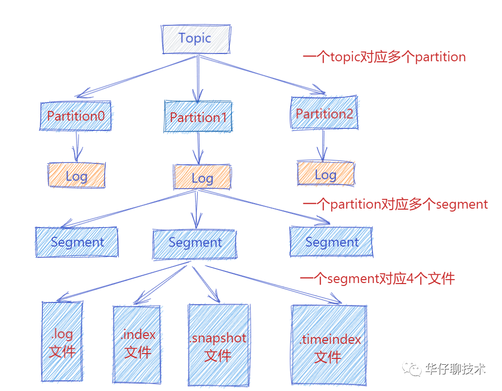
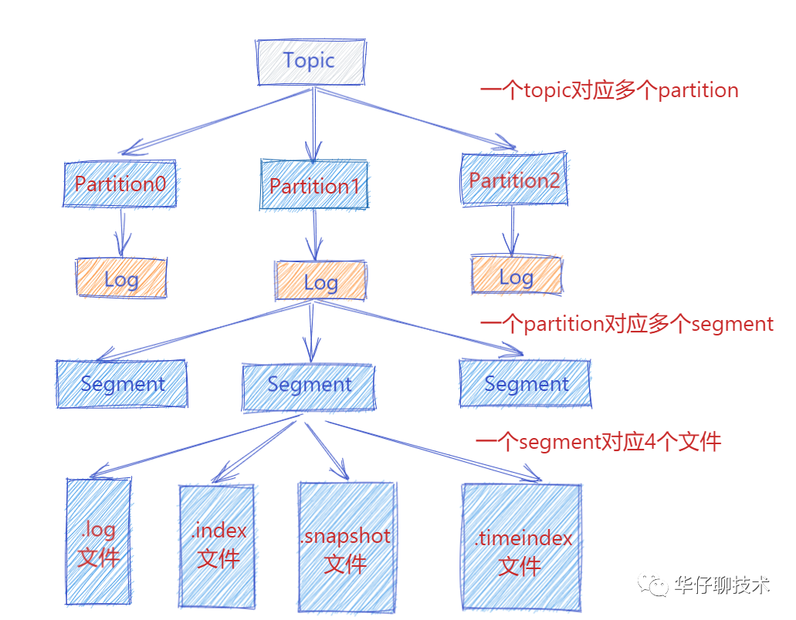

基础知识回顾
JAVA基础知识
集合（未施工）
HashMap
ConcurrentHashMap
JVM（未施工）
多线程（思维导图）

线程状态
锁（栅栏、锁升级）
AQS（还是要看一下其思想是什么）
线程池
Java网络IO
I/O
Input/Output的缩写，简单的理解为数据的输入输出，通常有网络IO、磁盘IO。而IO的类型又分为同步/异步IO、阻塞/非阻塞I/O，组合成具体的IO模型。IO属于操作系统层面上的知识，Java只是在操作系统提供的系统调用上封装了操作接口。
所有的系统IO都分为两个阶段：等待就绪和操作。以网络IO举例来说，读函数，分为等待网卡可以读和真正的读；同理，写函数，分为等待网卡可以写和真正的写。
需要说明的是等待网卡就绪的阻塞是不使用CPU的，是在空等；而真正的读写操作的阻塞是在使用CPU的，真正的在干活，而且这个过程非常快，属于内存拷贝，带宽通常在1GB/s级别以上，可以理解为基本不耗时。
操作系统层面上的IO模型包括
- 同步阻塞IO
- 同步非阻塞IO
- 异步非阻塞IO
- IO多路复用
- 信号驱动IO
我们通常在Java中说BIO、NIO、AIO都是在网络IO层面上的，因此处理大量网络连接、连接输入和输出数据的准备（因为数据的输入和输出需要经过网络，所以时延一定不会短）就是关键要处理的问题。
在Java中，JVM读写数据都需要经过操作系统内核
- 发送数据：JVM首先要把数据发送给内核，然后内核把数据交给网卡，网卡将数据通过互联网发送至客户端。
- 接收数据：需要让内核到网卡中查看数据是否已经准备好，如果准备好，则将数据放入内核，内核将数据转交给JVM，JVM再把数据交给我们具体的应用程序；如果没有准备好，通常会被阻塞，也有通过回调方式检测就绪事件（epoll相关）。


阻塞和非阻塞
阻塞和非阻塞的着重点在发起请求后，是否需要等待
- 阻塞：阻塞就是发起一个请求，调用者一直等待请求结果返回，也就是当前线程会被挂起，无法从事其他任务，只有当条件就绪才能继续。
- 非阻塞：非阻塞就是发起一个请求，调用者不用一直等着结果返回，可以先去干其他事情。
同步和异步
同步和异步的着重点在两个任务之间是否需要等待
- 同步：两个同步任务相互依赖，并且一个任务必须依赖于另一任务的某种方式执行。比如在
A->B事件模型中，需要先完成A才能执行B。换句话说，同步调用中，被调用者未处理完请求之前，调用不返回，调用者会一直等待结果的返回。举个例子，我要去买蛋糕和买菜，但是蛋糕还没做好，我需要等待蛋糕做好之后才能去买菜。 - 异步：两个异步的任务完全独立，一方的执行不需要等待另一方的执行。换句话说，异步调用中，调用后就返回，不需要等待结果返回，当结果返回的时候，通过回调函数或者其他方式拿着结果进行处理。举例来说，我要去买蛋糕和买菜，但是蛋糕还没做好，店主说留下地址蛋糕做好之后会送上门，那我立马就能去买菜了。
Linux中的select、poll、 epoll
select、poll、 epoll都是Linux内核提供给用户态的多路复用系统调用。进程可以通过一个系统调用函数从内核中获取多个事件。
select/poll
select实现多路复用的方式是，将已连接的Socket都放到一个文件描述符集合，然后调用select函数将文件描述符集合拷贝到内核中，让内核来检查是否有网络事件产生，检测的方式很粗暴，就是通过遍历文件描述符集合的方式，当检查到有事件产生后，将此Socket标记伟可读或可写，接着再把整个文件描述符集合拷贝回用户态中，随后用户态还需要通过遍历的方法找到可读、可写或可建立连接的Socket，然后再对其处理。
所以，对于select这种方式，需要进行2次遍历文件描述符集合的操作，一次是在内核态中，一个是在用户态中，而且还会发生2次拷贝文件描述符集合的操作，先从用户空间传入内核空间，由内核修改后，再传出到用户空间中。
select使用固定长度的BitsMap，表示文件描述符集合，而且BitsMap所支持的文件描述符的个数是有限的，在Linux系统中，由内核的FD_SETSIZE限制，默认最大值为1024。
poll不再用BitsMap来储存所关注的文件描述符，取而代之用动态数组，以链表形式来组织，突破了select使用BitsMap存储文件描述符个数限制，当然还是会受到系统文件描述符的数量限制。
但是poll和select并没有太大的本质区别，都是使用线性结构储存进程关注的Socket集合，因此都需要遍历文件描述符集合来找到可读或可写的Socket，**时间复杂度为O(n)**，而且也需要在用户态与内核态之间拷贝文件描述符集合，这种方式随着并发数上来，性能的损耗会呈指数级增长。
epoll
epoll在两个方面解决select/poll的问题
第一点，epoll在内核里使用红黑树来跟踪进程所有待检测的文件描述字，把需要监控的socket通过**epoll_ctl()**函数加入到内核中的红黑树里，红黑树是个高效的数据结构，增删查一般时间复杂度是O(logn)，通过维护内核中的这颗红黑树，就不需要像select/poll每次操作时都传入整个socket集合，只需要传入一个待检测的socket，减少了内核和用户态间大量的数据拷贝和内存分配。
第二点，epoll使用事件驱动的机制，内核里维护了一个链表来记录就绪事件，当某个socket有事件发生时，通过回调函数内核会将其加入到这个就绪事件列表中，当用户调用**epoll_wait()**函数时，只会返回有事件发生的文件描述符，不需要像select/poll一样遍历整个socket集合，大大提高了检测的效率。

epoll的方式即使监听的Socket数量越多的时候，效率不会大幅度降低，能够同时监听Socket的数目也非常的多，上限就是系统定义的进程能够打开的最大文件描述符个数。因此epoll被称为解决C10K问题的利器。
epoll 支持两种事件触发模式，分别是边缘触发（edge-triggered，ET）和水平触发（level-triggered，LT）：
- 边缘触发（edge-triggered，ET）：当被监控的Socket描述符上有可读事件发生时，服务器端只会从epoll_wait中苏醒一次，即使进程没有调用read函数从内核读取数据，也依然只苏醒一次，因为我们程序要保证一次性将内核缓冲区的数据读完。
- 水平触发（level-triggered，LT）：当被监控的Socket上有可读事件发生时，服务器端不断地从epoll_wait中苏醒，直到内核缓冲区数据被read函数读完才结束，目的时告诉我们有数据要读取（其实从这里就可以看出需要将数据从内核中拷贝到用户态）。
如果使用边缘触发模式，I/O 事件发生时只会通知一次，而且我们不知道到底能读写多少数据，所以在收到通知后应尽可能地读写数据（需要等待接收到所有的数据），以免错失读写的机会。因此，我们会循环从文件描述符读写数据，那么如果文件描述符读写是阻塞的，没有数据可读写时，进程会阻塞在读写函数那里，程序就没办法继续往下执行。所以，边缘触发模式一般和非阻塞 I/O 搭配使用，程序会一直执行 I/O 操作，直到系统调用（如 read 和 write）返回错误，错误类型为 EAGAIN 或 EWOULDBLOCK。
一般来说，边缘触发的效率比水平触发的效率要高，因为边缘触发可以减少 epoll_wait 的系统调用次数，系统调用也是有一定的开销的的，毕竟也存在上下文的切换。
select/poll 只有水平触发模式，epoll 默认的触发模式是水平触发，但是可以根据应用场景设置为边缘触发模式。
同步阻塞（JAVA BIO）
服务端实现模式为一个连接一个线程，所以当有大量连接的时候，线程数可能会超出JVM限制导致应用崩溃，当然可以使用线程池改善，限制线程池的最大线程数以限制最大连接数
在服务端视角，如果有N个客户端通讯，想要知道他们有没有发送数据过来，就需要告诉内核到网卡中查看，如果都没有数据过来，这N个线程就都被阻塞了
服务端Demo
1 | import java.io.*; |
客户端Demo
1 | import java.io.*; |
同步非阻塞（JAVA NIO）
JAVA NIO由IO多路复用实现，其中Socket主要的接收连接、读和写函数，在等待就绪阶段都是非阻塞的，真正的I/O操作是同步阻塞的（消耗CPU但性能非常高）。
JAVA NIO中有三个重要的概念，分别是缓冲区Buffer、通道Channel、选择器Selector：
- 缓冲区Buffer：包含一些要写入或者要读出的数据，在NIO库中，所有数据都是用缓冲区处理的。ByteBuffer、IntBuffer、CharBuffer、LongBuffer等都是其实现类。
- 通道Channel：Channel是全双工的，可以通过它读取和写入数据。通道和流的不通之处就是通道是双向的，流是单向的（一个流必须是 InputStream 或者 OutputStream 的子类）。
- 多路复用器Selector：多路复用器提供选择已经就绪的任务的能力，Selector 能够获取就绪的 Channel（Linux中select和poll是轮询来获取就绪的事件，但epoll实现是采用回调方式检测就绪事件，而不是轮询），如果某个 Channel 上面有新的 TCP 连接接入、读和写事件，这个 Channel 就处于就绪状态，会被 Selector 感知，然后通过 SelectionKey 可以获取就绪 Channel 的集合，进行后续的 I/O 操作。
服务端Demo
1 | import java.io.IOException; |
客户端Demo
1 | import java.io.IOException; |
优化线程模型
回忆BIO模型，之所以需要多线程，是因为在进行IO操作的时候，没办法知道硬件读写是否就绪，只能阻塞等待，造成大量的空等从而阻塞需要进行线程切换（浪费大量CPU资源在线程上下文切换）。而NIO通过将通道Channel注册到多路复用器Selector上，达到只有事件就绪才会执行真正的操作，减少空等的时间，提高CPU的利用率（CPU一直都在跑，没有等待），只有调用selector.select()时，没有就绪事件才会被阻塞，而这时没有事件就绪说明不需要处理，阻塞等待也是正常的。
NIO将原来BIO的阻塞读写变成了单线程轮询事件（单Reactor单线程模型），除了事件的轮询是阻塞的，剩余的IO操作都是纯CPU操作，没有必要开启多线程。并且由于节约线程，当连接数大的时候由线程切换带来的问题也随之解决，为海量连接提供可能。单线程处理I/O的效率确实非常高，没有线程切换，只是拼命的读、写、选择事件。但现在的服务器，一般都是多核处理器，如果能够利用多核心进行I/O，无疑对效率会有更大的提高。
分析我们程序的主要功能，包括：
- 网络IO处理，包括accept、read、write等
- 业务逻辑，通过网络获取到需要的数据之后需要对数据进行处理后返回，这里还会有其他的阻塞IO，如DB操作、RPC等
根据功能的线程划分，能够将Reactor线程设计模式分为：
- 单Reactor单线程模型
- 单Reactor多线程模型
- 主从Reactor多线程模型
Reactor设计模式
Reactor模型是可以处理一个或多个输入源，并通过Service Handler同步的将输入事件（Event）采用多路复用分发给相应的Request Handler（多个）处理的事件驱动模式
Reactor模型用于NIO，是一种思想，多线程的思想。其中定义了三个角色：
- Reactor：负责监听和分配事件
- Acceptor：处理客户端到来的新连接，并分派请求到Handler链中
- Handler：执行非阻塞读写任务，完成数据读入，处理业务逻辑后，将结果写出
单Reactor单线程模型
Reactor、Acceptor、Handler都在一个线程中
优点：模型简单，没有多线程、进程通信、竞争的问题
缺点：无法发挥多核CPU的性能，此外如果业务处理速度比较慢就会影响到程序的高并发性能，任何地方不可用都会导致整个通信模块的不可用
Redis就是这种模型，实际使用的是单线程+队列
单Reactor多线程模型
Reactor主线程中主要负责网络IO相关的处理，包括连接的建立、数据读写，把具体的业务处理逻辑放到线程池中处理
优点：充分利用多核CPU的处理能力，业务阻塞不会影响通信模块
缺点：多线程数据共享和访问的问题，Reactor在单线程中承担所有事件的监听和相应，高并发场景下容易成为性能瓶颈
主从Reactor多线程模型
Reactor主线程中只负责连接的建立，Reactor子线程负责读写数据，在线程池完成业务处理
对连接的处理和读写通常可以选择分开，这样对于海量连接的注册和读写就可以分发到不同的线程中进行处理，在单线程Reactor模型和单Reactor多线程模型中，虽然read()和write()都是效率比较高的非阻塞函数，但Reactor线程毕竟只占用一个CPU内核，如果面对更高的并发则无能为力。主从Reactor多线程模型就能够解决这个问题。
这种模型在许多项目中广泛使用，包括Nginx主从Reactor多进程模型，Memcached主从多线程，Netty主从多线程模型的支持。
异步非阻塞（JAVA AIO）
BIO和NIO对于内核来说，都是应用程序不询问我，我绝不会主动通知的方式
还记得IO操作分为两个阶段：等待就绪和实际操作。在NIO中，等待就绪阶段是不会被阻塞的，但是还是需要实际操作数据，将数据从内核态中拷贝到用户态。AIO解决的就是这个问题，当应用程序发起异步IO之后，内核会完成数据的就绪和将数据从内核态拷贝到用户态中，应用程序并不需要主动发起拷贝动作。
AIO采用订阅-通知的方式：应用程序向操作系统注册IO监听，然后继续做自己的事情。当操作系统发生IO事件，并且准备好数据后，再主动通知应用程序，触发相应的回调函数。如果发起异步读写请求，还需要传入数据缓冲区Buffer的地址（用于存放结果数据）等信息，这样内核才能自动帮我们把数据的读写工作完成。
AIO也是需要操作系统支持，微软的windows系统提供了一种异步IO技术IOCP(I/O Completion Port，I/O完成端口)；Linux下由于没有这种异步IO技术，所以使用的是epoll对异步IO进行模拟
NIO中有一个重要的概念多路复用器Selector，负责替应用查询中所有已注册的通道到操作系统中进行IO事件轮询、管理当前注册的通道集合，定位发生事件的通道等操操作；但是在Java AIO框架中，由于应用程序不是轮询方式，而是订阅-通知方式，所以不再需要Selector(选择器)了，改由channel通道直接到操作系统注册监听，让操作系统回调实际操作函数。

服务器Demo
1 | <dependency> |
1 | import java.io.IOException; |
Proactor设计模式
Reactor是用于非阻塞同步的设计模型，Proactor是用于异步IO的设计模型
Proactor整体上与Reactor一致，区别在于Proactor模式将所有IO操作都交给内核处理，工作线程仅仅负责业务逻辑。Proactor关注的不是就绪事件，而是完成事件，这是区分Reactor模式的关键点。
Proactor模型主要包括四个角色：
- Procator Initiator：负责创建Handler和Procator，并将Procator和Handler（作为回调）都通过Asynchronous operation processor注册到内核
- Handler：执行业务流程的业务处理器
- Asynchronous operation processor：负责处理注册请求，并完成IO操作。完成IO操作后会通知Procator
- Procator：根据不同的事件类型回调不同的handler进行业务处理
参考资料：
https://tech.meituan.com/2016/11/04/nio.html
https://developer.aliyun.com/article/726698#slide-11
https://blog.csdn.net/zdreamLife/article/details/124222337
https://blog.csdn.net/u013256816/article/details/115388239
https://pdai.tech/md/java/io/java-io-aio.html
https://www.zhihu.com/question/26943938
https://www.cnblogs.com/chenssy/p/15526729.html
https://mp.weixin.qq.com/s/Qpa0qXxuIM8jrBqDaXmVNA
计算机基础（部分施工）
计算机网络
五元组确定一个连接：协议（TCP/UDP）、源IP、源端口、目标IP、目标端口
发起HTTP请求的流程
ARP（地址解析协议）
DNS
PING，ICMP
TCP/IP
TCP -三次握手四次挥手
CLOSED WAIT
TIME WAIT
UDP
操作系统（部分施工）
上下文切换类型
- 中断上下文切换：为了快速响应硬件的事件，中断处理会打断进程的正常调度和执行，转而调用中断处理程序，响应设备事件。在内核态执行不涉及进程的用户态，只包括内核态中断服务程序执行所必需的状态，包括CPU寄存器、程序计数器、内核堆栈、硬件中断参数等。
- CPU上下文切换：CPU寄存器、程序计数器PC，所有函数调用都会触发CPU上下文切换，因为需要记住函数调用前的状态以及函数调用后的返回入口
- 线程上下文切换：线程私有数据、栈、寄存器等
- 进程上下文切换：虚拟内存、全局变量等
进程切换发生在什么时候？
进程切换一定发生在中断、异常、系统调用的处理过程中，因为中断、异常、系统调用进入内核态之后，系统进程管理模块就会根据进程的状态进行进程调度（进程调度实际上也是一个程序）
- 时间片中断、IO中断后更改优先级进程（导致被中断进程进入就绪态）
- 阻塞式系统调用、缺页中断（导致被中断进程进入等待态）
- 终止用系统调用、不能继续执行的异常（导致被中断进程进入终止态）
举例说明
- 时钟中断：操作系统确定当前正在运行的进程的执行时间是否已经超过了最大允许时间段，如果超过了，进程必须切换到就绪态，调度另一个进程。（时钟频率，每隔一段时间就会发生一次时钟中断，时钟中断处理程序就会被自动调用，在其中判断进程时间片是否用完）
- I/O中断：操作系统确定是否发生了I/O活动。如果I/O活动是一个或多个进程正在等待的事件，操作系统把所有相应的阻塞态转换到就绪态，操作系统必须决定是让具有高优先级的就绪态进程抢占当前进程，还是继续执行当前处于运行态的进程。
- 缺页中断（内存页失效）：处理器访问一个虚拟内存地址，且此内存页不在内存中，操作系统必须从磁盘中调入该内存页至内存中。在发出调入内存页的I/O请求之后，操作系统会执行一个进程切换，以高效利用CPU。而发生缺页的进程被置为阻塞态，当内存页调入完毕后，该进程被置为就绪态等待调度。
- 对于陷阱：操作系统确定错误或异常条件是否致命的。如果是，当前正在运行的进程被转换到退出态，并发生进程切换；如果不是，操作系统的动作取决于错误的种类和操作系统的设计，其行为可以是试图恢复或通知用户，操作系统可能会进行一次进程切换或者继续执行当前正在运行的进程。
- 操作系统的进程调度可能被来自正在执行的程序的系统调用激活。例如，一个用户进程正在运行，并且正在执行一条请求I/O操作的指令，如打开文件，这个调用导致转移到作为操作系统代码一部分的一个例程上进行。通常，使用系统调用会导致操作系统把用户线程置为阻塞态。
进程是怎么样切换的
进程、线程、协程
页式、段式、段页式
虚拟内存（储存）
虚拟硬盘
CPU寻址、逻辑地址、物理地址
磁盘
MySQL
MyISAM和InnoDB的区别
MyISAM
- 不支持事务、崩溃恢复
- 不支持行锁，只支持表锁
- 不支持外键
- 主键索引中叶子节点储存的不是数据记录，而是记录的内存地址，因此MyISAM的数据文件分为索引文件和数据文件
InnoDB
- 支持事务，崩溃恢复，有redo log
- 支持表锁、行级锁，通过MVCC和Next-key Lock在可重复读的隔离级别下解决幻读的问题
- 支持外键
- InnoDB的主键索引是聚簇索引，所以数据文件只有一个
索引
以 InnoDB 的一个整数字段索引为例，N叉B+树的N 差不多是 1200。这棵树高是 4 的时候，就可以存 1200 的 3 次方个值，这已经 17 亿了。考虑到树根的数据块总是在内存中的，一个 10 亿行的表上一个整数字段的索引，查找一个值最多只需要访问 3 次磁盘。其实，树的第二层也有很大概率在内存中，那么访问磁盘的平均次数就更少了。
索引类型（分类角度）
主键索引：一种特殊的唯一索引，一个表只能有一个主键，不允许有空值，主键索引的记录在物理存储上的方式跟数据库引擎的实现有关，MyISAM中主键索引B+树的叶子节点储存的是记录的物理地址（所以数据库的数据文件分为索引文件和数据文件），而InnoDB中主键索引B+树的叶子节点储存了记录的所有字段值。
普通索引：就是普通的索引。
唯一索引：字段唯一，能够允许NULL值，就是只要是NULL就认为是不一样的，在InnoDB中NULL值储存在B+树的最左边。
前缀索引：指对字符类型字段的前几个字符或对二进制类型字段的前几个bytes建立的索引，而不是在整个字段上建索引。前缀索引可以建立在类型为char、varchar、binary、varbinary的列上，可以大大减少索引占用的存储空间，也能提升索引的查询效率。
全文索引：与搜索引擎相关，都是需要分词，然后根据关键字中的词频和重要性进行排序。
联合索引：由多个字段组合形成的索引。
聚簇索引与非聚簇索引（物理储存角度）
聚簇索引：记录的物理储存顺序与列值（一般是主键的一列）的逻辑顺序相同，一个表中只有一个聚簇索引（因为聚簇索引的记录在物理储存上是有序的，所以当按照主键遍历的时候，相邻的主键都在同一块内存页中，能够减少缺页中断，提高查询效率）。
非聚簇索引（二级索引、辅助索引）：与聚簇索引相反，如果记录的物理储存顺序与列值的逻辑顺序不一样，那么就是非聚簇索引，一个表中可以有多个非聚簇索引。
B+树索引和哈希索引（数据结构角度）
B+树索引：B+树是多叉平衡树，所以能够快速搜索到记录的位置，B+树的特点是非叶子节点不储存数据，叶子节点储存数据，最后所有叶子节点组成一条有序的双向链表，因为非叶子节点不储存数据，所以单个非叶子节点能够储存大量的索引数据，而由于这些索引数据是经常被访问的，所以能够常驻在内存中，减少缺页中断（或SWAP）带来的性能消耗。
B树索引：B树叶子节点也储存数据，而且所有叶子节点不会组成有序链表。
哈希索引：经过哈希函数能够快速找到记录的位置，不需要进行搜索（哈希冲突解决的办法）
自适应哈希索引
InnoDB引擎支持自适应哈希索引，是数据库自动优化，只能选择开启或者关闭。
因为当使用辅助索引进行查找的时候，如果并不是覆盖索引，就需要回表到主键索引中找到记录的所有数据，如果这种查询的次数变多，那么InnoDB就会自动创建自适应哈希索引，提高在通过辅助索引查找到主键Id的时候，再回表的查询速度。（即通过辅助索引查找到主键Id，然后通过主键Id的哈希索引直接找到记录的位置）。
根据一些资料的统计，读取和写入速度可以提高2倍，辅助索引的连接操作性能可以提高5倍。
https://juejin.cn/post/6844903888080863245
主键索引就是聚簇索引吗？
不是！！！在InnoDB中主键的确是按聚簇索引的方式组织的，但是在MyISAM里面主键不是聚簇索引，sql server中还可以显示的指定聚簇索引。
InnoDB中如果没有定义主键，Innodb会选择非空的唯一索引代替。如果没有这样的索引，Innodb会隐式的定义一个主键来作为聚簇索引。
https://www.cnblogs.com/lice-blog/p/11569443.html
什么是联合索引、覆盖索引、索引最左匹配原则
联合索引：由多个字段组合形成的索引
覆盖索引：查询的字段会被索引覆盖到，就不需要回表根据主键Id查询其他字段，单个字段的索引和联合索引都能实现覆盖索引的功能。所以说覆盖索引并不是一种真正的索引，是查询的时候用到的索引覆盖到了所有需要查询的字段。
索引最左匹配原则：对于一个联合索引（a, b, c, d），如果查询的时候指定了查询条件
a = 1 AND b = 2 AND c > 4 AND d < 5，因为索引整体上是按a,b,c,d来排序的（即先按a排序，a相等的时候按b排序，以此类推），所以当a和b指定了确切的值的时候，记录在c上是有序的，但是在d上就不确认了。当联合索引遇到范围查询（>，<，between，like）最左匹配就不能进一步匹配了。（当然MySQL会优化查询的顺序比如，d < 5 AND b = 2 AND c > 4 AND a = 1会优化为a = 1 AND b = 2 AND c > 4 AND d < 5）
说一下索引下推
索引下推可以在索引遍历过程中（引擎层），对索引中包含的字段先做判断，直接过滤掉不满足条件的记录，减少回表次数。
对于一个联合索引（name, age）和一个SQL语句
1 | select * from tuser where name like '张%' and age = 10 and ismale = 1; |
- 如果没有索引下推，因为最左匹配原则，所以只会用到
name的索引，所以在引擎层会找到所有name like '张%'的主键并返回给server层，然后逐个回表判断 - 如果有索引下推，即使有最左匹配原则，也会将索引能用到的
age = 10放到引擎层进行判断，引擎层根据索引判断，只返回name like '张%' and age = 10的主键，这样过滤了不符合的部分数据，就能减少回表的次数
事务
事务的四大特性（ACID）
- 原子性：一个事务是最小执行单位，事务中的动作要么都做，要么都不做
- 一致性：执行事务之后，数据保持一致，多个事务对同一个数据读取的结果是相同的
- 隔离性：并发访问数据库的时候，各个事务之间不会相互影响
- 持久性：一个事务被提交之后，对数据库的修改是持久的，即使数据库发生故障也不会有影响
可能出现的问题
- 脏读：事务A能够读到事务B还没提交的数据
- 不可重复读：对于读取一行数据，一个事务中两次读到的数据不一样
- 幻读：对于读取多行数据，一个事务中第二次读到的行数比第一次读到的行数要多
- 丢失修改：ABA问题，事务A读取记录R为20，将R-1=19后写入数据库，事务B也执行一样的操作，但是最后数据库中的记录是R=19，事务A的操作被事务B覆盖（这种是程序逻辑本身的问题，所以需要对需要修改的数据加锁/版本号/旧值比较）
隔离等级
读未提交：一个事务还没提交，其变更就能被其他事务看到
读已提交：一个事务提交之后，其变更才能被其他事务看到，能够解决脏读的问题
可重复读：一个事务执行过程中，对同一字段的多次读取结果是一样的，除非数据是被自己事务本身修改，能够解决不可重复读的问题，但是幻读仍然有可能发生（InnoDB通过MVCC和Next-key Lock在可重复读的隔离级别下解决了幻读的问题）
串行化：所有事务都是串行执行的，完全服从ACID的隔离级别，能解决所有问题
锁 、间隙锁、Next-Key Lock
全局锁：对整个数据库加锁（Flush tables with read lock），典型应用场景是做全库逻辑备份（如果使用InnoDB，则使用mysqldump备份数据库的时候，有MVCC的支持，就不用加全局锁了）
表级锁：又分为表锁和元数据锁（metadata lock， MDL）
- 元数据锁：锁住表结构，在访问一个表的时候会被自动加上，事务中的MDL锁会在语句执行开始时申请，但是语句结束后并不会马上释放，而是等到整个事务提交后才会释放
行锁：锁住一行，在InnoDB的事务中，行锁是在语句执行的时候加上，但是要等到事务结束才会释放（两阶段锁协议）
- 行锁可能出现死锁的一种情况，事务A执行了第一条语句，事务B执行了第一条语句，两个事务分别获得了不同的行锁
- 解决行锁死锁的方法， 1. 等待超时（innodb_lock_wait_timeout），2. 发起死锁检测，发现死锁后，主动回滚死锁链条中的某一个事务（innodb_deadlock_detect = on）
1 | -- 事务A |
- 间隙锁（Gap Lock）:锁住两个值之间的空隙，前开后开区间，如6个值，有7个空隙，包括（-∞，num）和（num, +∞）
- 跟间隙锁存在冲突关系的，是“往这个间隙中插入一个记录”这个操作
- 间隙锁死锁的例子
- session A 执行 select … for update 语句，由于 id=9 这一行并不存在，因此会加上间隙锁 (5,10);
- session B 执行 select … for update 语句，同样会加上间隙锁 (5,10)，间隙锁之间不会冲突，因此这个语句可以执行成功；
- session B 试图插入一行 (9,9,9)，被 session A 的间隙锁挡住了，只好进入等待；
- session A 试图插入一行 (9,9,9)，被 session B 的间隙锁挡住了。

- Next-key Lock：Inno加锁的基本单位，为的就是解决幻读，行锁
b和间隙锁(a, b)加在一起，就是一个Next-key Lock，是前开后闭区间(a, b]
多版本并发控制MVCC
MVCC加上Next-key Lock就能够解决幻读的问题。单单MVCC只能解决可重复读，当前读的情况下，还是会出现幻读
在MVCC中，非锁定读（普通select）是不用加锁的，但是锁定读(select … for update / select … lock in share mode / update / insert / delete)的时候会用锁
InnoDB中，每条记录在更新的时候都会同时记录一条回滚操作，因此能得到上一个状态的值。（这个回滚日志
undolog会在不需要的时候才删除，即当前所有事务中的最小版本号大于回滚日志的版本号）
标识ID
- 每个事务都有一个唯一的事务ID（transaction id），每个事务开始前向InnoDB的事务系统申请，严格递增
- 每行数据都有多个版本row trx_id，每次事务更新数据的时候，都会生成一个新的数据版本，并把事务ID赋值给row trx_id，旧的数据版本能够通过回滚日志得到

详细过程
核心是通过版本控制来获得一个一致性视图，但是当事务更新数据的时候，只能用当前读，如果当前记录的行锁被其他事务占用，就只能进入锁等待。
- 当前事务开始时，构造一个数组用于保存当前事务启动瞬间活跃的所有事务ID（即启动了，但是还没有提交）
- 数组里面事务ID的最小值记为低水位，事务ID的最大值+1记为高水位，数组和高水位就组成了当前事务的一致性视图（read-view）
- 对于一个数据记录的row trx_id来说，有以下几种可能
- row trx_id小于低水位，落在绿色部分，表示这个版本的数据是已经提交的，或者是当前事务自己生成的，所以数据可见
- row trx_id大于高水位，落在红色部分，表示这个版本的数据是由未来的事务生成的，不可见
- 如果落在黄色部分：
- row trx_id在数组中，表示这个版本是由未提交的事务生成的，不可见
- row trx_id不在数组中，表示这个版本的数据是由已提交的事务生成的，可见（因为低水位和高水位表示的只是一个区间，这个区间中有已经提交的事务和未提交的事务，数组中的是未提交的事务，而当前的事务ID大于高水位，row trx_id落在这个区间内已提交的事务，哪当然是可见的）
- 当前读：更新数据都是先读后写的，而这个读，只能读已经提交完成的最新版本
- 如果是更新/删除/插入这些锁定读的事务呢？两阶段锁协议，需要等到获得锁的事务结束了，释放锁，才能继续当前读，继续后面的操作

ABA问题
MVCC也会出现ABA问题，因为只有在锁定读的时候才会加锁，所以可能会出现ABA问题，一个简单的例子，事务A读取了记录R数值为1，之后事务B也读取这个记录R数值为1，之后事务AB都想要将记录R+1后更新，那么最后结果就会变成2，但是期望是3。ABA问题是编程问题，所以可以使用select … lock for update来锁住想要更新的表，这样只有获取到锁的事务才能进行操作。或者加一个旧值/版本号进行判断，只有当旧值/版本号一样的时候才更新（但是修改失败需要有重试机制）。
binlog、redolog
binlog（归档日志）
binlog的主要作用是用于备份，以及主从同步
binlog的写是追加写，所以不会覆盖以前的数据
三种数据格式：
- statement – 记录执行的SQL语句，简洁，但是主库与从库执行同一条语句的结果可能不一样，如NOW()
- row – 记录真实数据的变化，可靠，主从库执行结果一样，但是占空间
- mixed – 前两种的混合，MySQL自己判断如果会引起主备不一致的时候，就用row格式，否则用statement
redo log（重做日志）
redolog主要的作用是用于崩溃恢复，固定大小，循环写，可以比如可以配置一组4个文件，每个文件大小1GB，从头开始写，写到末尾又回到开头循环写。
write pos：表示当前写记录的位置，一边写一边后移
check point：check point之前的数据都是已经落盘（flush到磁盘）上的，write pos大于check point，write pos 与check point之间的数据表示在内存页上，但是还没落盘的数据
缓冲结构
崩溃分为数据库崩溃和操作系统崩溃，数据库崩溃只会影响MySQL中的缓存（丢失这一部分，已经调用write写入到操作系统缓存中的则是正常的），操作系统崩溃则是影响数据的落盘（无法恢复）
buffer pool：MySQL中用于缓存页的地方，有脏页以及干净页，脏页落盘需要flush，干净页不用
change buffer：buffer pool内的一部分，主要用于记录页面数据的变化，如果一个数据页已经在内存中，则可以直接修改这个内存数据页然后变成脏页；但是如果一个数据页不在内存中，在磁盘中，则可以将更新操作写到change buffer中，这样能够避免将数据页从磁盘中读取到内存中，减少磁盘的随机读IO，适用于多写少读，当要读取这个数据页的数据时，再将从磁盘中读取的数据执行change buffer中的操作就能得到最新的数据。
redolog buffer：可以认为也是buffer pool中的一部分，事务执行过程中更新数据的日志都得先保存起来，但是又不能在还没commit的时候写入到redo log文件中，所以先用redolog buffer来存redo日志。
操作系统的缓存 os cache：调用操作系统的write函数并不会将数据直接写入磁盘，而是先写入系统的缓冲池中，系统自己判断何时将数据flush进磁盘，数据库崩溃不会影响到这部分的数据，操作系统崩溃才会影响。
二阶段提交
redo log是InnoDB引擎特有，用于提供崩溃恢复的功能，而二阶段提交涉及到binlog(归档日志)还有redolog(重做日志)，即server层与引擎层之间的交互。
两阶段提交的作用：保证MySQL数据库中的记录与磁盘中的记录一致
方法流程：
- 执行器调用引擎的API接口(未写
binlog)，写入一行数据 - InnoDB引擎把数据保存在内存中，同时记录
redolog，此时redolog进入prepare状态，然后告诉执行器，执行完成可以随时提交 - 执行器收到通知后记录
binlog，然后调用InnoDB引擎接口说已经写完binlog - InnoDB写
redolog为commit状态 - 更新完成
为什么要这样子？
- 假设先写redolog并设为commit状态，然后写binlog，那么写完
redolog之后，机器挂了，binlog日志没有被写入。机器重启后，会通过redolog恢复数据，但是binlog没有记录这一条数据，那么后续机器根据binlog备份或者主从同步的时候，就会丢失这一条数据。 - 假设先写binlog，然后写redolog，那么当
binlog写完的时候，机器异常重启了，但是由于没有这条redolog，所以机器无法恢复这一条记录，但是binlog里面多出这一条数据，哪备份或者主从同步的时候也会出现同样的问题。 - 二阶段提交如何保证一致性？假设极端的状态是
redolog已经处于prepare状态，binlog也已经写完了，这个时候发生异常重启，就要依赖MySQL的处理机制- 判断
redolog是否完整(commit状态)，如果是完整的，就能立即提交 - 如果
redolog只是prepare状态，但不是commit状态，这个时候就判断binlog是否完整，如果完整就提交redolog，不完整就回滚事务
- 判断
主从模式
详细流程
- 在备库B上通过change master命令，设置主库A的IP、端口、用户名、密码，以及要从哪个位置开始请求binlog，这个位置包含文件名和日志偏移量
- 在备库B上执行start slave命令，这个时候备库会启动两个线程，一个是io_thread，另一个是sql_thread。io_thread负责与主库A建立连接，获取binlog
- 主库A校验完备库B传来的参数之后，按照请求的位置读取binlog通过dump_thread线程发给备库B
- 备库B拿到binlog之后，写到本地文件，称为中转日志（relay log）
- 备库B中的sql_thread读取中转日志，解析日志理的命令，并执行

循环复制问题
一般来说都是双Master结构，即节点A和节点B之间互为主从关系
但是这样会产生一个问题，就是节点A更新了一条语句，并将binlog发给节点B，节点B更新之后又将binlog发给节点A执行
解决方法
设置server id
- 规定两个库的server id必须不同，如果相同，则它们之间不能设定为主备关系
- 一个备库收到binlog并且在重放过程中，要生成与原binlog的server id相同的新binlog
- 备库收到主库发过来的binlog记录，先判断server id是不是跟自己的一样，一样表示这个日志是自己生成的，则直接丢弃；不一样表示不是自己生成的，重做这个日志

inner join、left join、right join、full join
inner join：等同于平时使用
，连接两个表，内连接，交集left join：返回左表的全部数据
right join：返回右表的全部数据
full join：返回左右两个表的所有数据，并集

on和where的区别
on：在生成临时表时使用的条件，不管on中的条件，都会返回left join / right join / full join时，左边/右边/两边表中的记录
where：临时表生成好后，对临时表进行过滤，所有条件不为真的记录都被过滤掉
https://www.runoob.com/w3cnote/sql-different-on-and-where.html
小表驱动大表
select * from t1 straight_join t2 on (t1.a = t2.a); 能够让MySQL使用固定的连接方式执行查询，t1是驱动表、t2是被驱动表
小表是指两个表按照各自的条件过滤之后，参与join的各个字段的总数据量小的表
驱动与被驱动：按照驱动表t1的数据到被驱动表t2中逐条查找数据，驱动表是外层循环，被驱动表是内层循环
Index Nested-Loop Join：能够用上被驱动表的索引
Simple Nested-Loop Join：不能用索引的情况下，就是两层循环
Block Nested-Loop Join：先将驱动表数据放入join buffer中，再根据被驱动表与join buffer中的数据对比
数据库优化（未施工）
Spring（未施工）
DI IOC AOP
Bean的生命周期
Spring MVC的工作流程
Spring MVC的常用注解
k8s（待收拾）
k8s的操作命令
kubectl 动作 资源 -其他参数
- 动作包括
- create
- apply
- get
- describe
- exec
- logs
- delete
- explain
- 资源包括
- Deployment
- StatefullSet
- ConfigMap
- Secret
- HPA
- RC、RS
- pods
- nodes
- namespace
k8s的组件

- Kubectl：客户端与k8s集群交互的命令行工具
- API server：作为k8s系统的入口，其封装了核心对象的增删改查操作，以及提供RESTful API接口给外部客户端或者k8s内部组件调用。维护的RSET对象会被持久化储存到etcd分布式数据库中
- Scheduler：负责集群的资源调度，为新建立的pod选择节点node进行部署。组件抽离，可以方便替换成其他调度器
- Controller Manager：负责维护集群的状态，比如故障检测、自动扩展、滚动更新等
- Kubelet：负责维护容器的生命周期，同时也负责Volume（CSI）和网络（CNI）的管理
- Container runtime：负责镜像管理以及pod和容器的真正运行（CRI）
- Kube-proxy：负责为Service提供cluster内部的服务发现和负载均衡
- CoreDNS：负责为整个集群提供DNS服务
- Ingress Controller：为k8s中的服务提供外网入口
- Prometheus：为整个集群提供资源监控能力
- Dashboard
- Federation
控制器类型
- HPA：根据CPU使用率和内存使用率进行自动扩缩容
- Deployment：一般用于负责管理RC和RS，提供滚动更新/回滚能力
- Replication Controller 和 Replication Set：RS用于替代RC，主要作用是维护应用的副本数量，并且RS支持集合式的selector
- Deployment：一般用于负责管理RC和RS，提供滚动更新/回滚能力
- StatefullSet：解决有状态服务的问题，Pod重新调度之后还是有：稳定的持久化存储、稳定的网络标志（基于Headless Service没有Cluster IP的Service来实现）、有序部署、有序收缩
- DaemonSet：保证每个节点Node上都运行一个Pod的副本
- Job，CronJob：Job负责仅执行一次的任务，Cron Job则是基于Crontable的定时任务
K8S网络

资源类型
资源清单–k8s中用于定义资源的yaml文件
- NameSpace级别
- 工作负载型资源：Pod、RC、RS、Deployment…..
- 服务发现及负载均衡型资源：Service、Ingress…
- 配置与储存型资源：PV、PVC…
- 特殊类型的储存卷：ConfigMap，Secret….
- 集群级别
- NameSpace、Node、ClusterRole、ClusterRoleBinding
- 元数据型资源
- HPA、PodTemplate、LimitRange
Pod的生命周期
一个Pod里面至少有两个容器，一个是pause容器，负责维护pod内部的网络和共享储存卷，使得pod内部的容器能够使用localhost互相访问，以及使用相同的共享储存卷，其他的容器就是应用启动的容器了
- Init容器：用于做初始化的容器，执行的顺序是按照定义时候的顺序，Init容器启动失败k8s会不断地重试，除非将restartPolicy设为Never（Pod重启，Init容器也会重新执行）
- 探针
- 就绪探针
- 存活探针
- Pod hook钩子：在容器中进程启动前或者容器中进程终止运行之前运行，包含在容器的生命周期之中
- exec：执行一段命令
- HTTP：发送Http请求
Service的网络流向
apiserver发出一个请求（IP，PORT）随机到一个节点Node上，那么节点Node怎么知道是要访问哪个pod地址呢？
首先会经过节点上的kube-proxy，然后kube-proxy到内核中去查找ip映射表，这个时候就要用上ipvs或者是iptables了，查找到之后再将流量负载均衡定向到对应的pod中
ipvs对比iptables
都是基于netfilter
- iptables使用列表来记录所有的规则，并且匹配方式是全部扫描匹配，所以当集群规模大的时候，性能问题就会突出
- ipvs使用hash表，hash随机访问的特性在集群规模大的时候，也不会影响性能
Headless Service
有时候不需要或者不想要负载均衡，以及单独的Service IP，可以将Cluster IP设置为None来创建Headless Service，StatefullSet的网络也是依靠Headless Service来实现稳定访问的
Statefulset中创建的无头服务会为集群内部的每个成员提供一个唯一的DNS域名来作为每个成员的网络标识，集群内部成员之间使用域名通信（pod名称+序号.Service名称），如服务名称是服务名.命名空间.svc.cluster.local，那么一个创建的Pod使用的域名是pod名称-序号.服务名.命名空间.svc.cluster.local，如果StatefulSet中的一个Pod挂掉，那么新创建的Pod会被赋予跟原来Pod一样的名字，通过这个名字来匹配原来的储存和网络，因此实现了状态的保存。
访问一个普通的
Service, kube-proxy会将请求重定向到后端的某个Pod, 多次请求虽然发送到的后端可能不同, 但是前端是无感知的, 因为Service本身有固定IP.但是访问一个
headless service, 其实是随机且直接访问到后端Pod, 比如多次ping redis-service, 你会发现解析出来的地址是不同的, 而这些地址都是Pod的地址.
亲和性，反亲和性，污点，污点容忍
亲和性（pod的策略）
- 节点亲和性
- 软策略
- 硬策略
- Pod亲和性
- 硬策略
- 软策略
污点（node的策略）
节点选项：
- NoSchedule：表示k8s将不会将pod调度到具有该污点的Node上
- PreferNoSchedule：表示k8s将尽量避免将pod调度到具有该污点的Node上
- NoExecute：表示k8s将不会将pod调度到具有该污点的Node上，同时会将Node上已经存在的pod驱逐出去
pod的污点容忍：pod可以容忍node中污点的存在，并被调度到存在污点的node上
Prometheus-operator
Redis（未施工）
Redis 数据类型
- string
- list
- hash
- set
- zset
- hyperloglog
- GEO
- bitmap
- stream
Redis 数据结构
- SDS
- 链表
- 压缩列表-缺陷是啥
- 哈希表-rehash过程，渐进式哈希（两个哈希表），哈希冲突解决方法
- 整数集合–升级过程
- 跳表-查询过程，层数设计，插入方式
- quicklist–链表+压缩列表
- listpack
持久化
- RDB - 生成RDB流程
- AOF - 生成AOD流程，以及AOF重写，AOF写回策略
过期删除和内存淘汰策略
- 过期删除的删除策略是什么？
- 内存淘汰策略
- 不淘汰 - 抛出异常
- 淘汰
- 在设置了过期时间的键中删除（随机，LFU，LRU，TTL）
- 在所有键中删除（随机，LRU，LFU）
高可用
- 主从复制流程
- 哨兵模式
缓存
- 缓存雪崩
- 缓存击穿
- 缓存穿透
https://xiaolincoding.com/redis/base/redis_interview.html#%E8%AE%A4%E8%AF%86-redis
Kafka
基本概念
主要是分清Broker、主题Topic、分区Partition、副本Replica之间的概念
服务器层面
- Broker：一个独立的Kafka服务被称为Broker，可以理解为Kafka集群中的一个节点。
- 集群控制器（Controller）：每一个集群都会选举出一个Broker作为集群控制器Controller（第一个成功在zookeeper中创建
/kafka/controller节点的Broker会被指定为集群控制器），主要负责集群管理工作，包括：- 创建删除主题、增加分区并选择副本的Leader
- 集群Broker管理（Broker新增、退出、故障）
- 分区副本Preferred Leader选举
- 消费者组分区重分配
- 数据服务 – 向其他Broker提供集群的元数据信息
主题层面
- 主题（Topic）：主题-订阅的模式，生产者将消息发送至相应的Topic中，消费者则从感兴趣的Topic中取出消息消费。Topic是一个逻辑概念。
- 分区（Partition）：一个Topic被分成多个分区Partition，一个Partition从属于一个Broker，是最基本的储存单元，储存着一个Topic中的部分数据。每个Partition都有自己独立的log文件，每条记录都以追加的形式写入。
- 副本（Replica）：为了保证Kafka的高可用，一个分区通常拥有多个副本。其中一个为Leader replica，其他为Follower replica，所有的事件都直接发送给Leader replica，Follower replica通过主从同步来保持与Leader replica数据一致。
- 偏移量（Offset）：Partition中的每条记录都会被分配一个唯一的序号，称为偏移量Offset。
- 消息（Message）：Kafka的基本数据单元。
- 批次（Batch）：为了减少网络了开销，提高IO效率，多个消息会被放入同一批次之后再发送给Kafka。
Leader选举
Kafka中多处涉及选举机制，容易混淆
- Broker Controller组件Leader的选举 – 主要是监控Kafka集群状态
- 分区多副本机制选举Leader – 副本的Leader负责与生产者消费者的所有通信，Follower只是作为可靠性备份（主从机制）
- 消费者选举Leader – 消费者的Leader选举主要是负责消费者组内各个消费者消费分区的分配
生产者客户端工作原理

整个生产者客户端主要由两个线程协调运行，分别是程序主线程和发送线程。
- 程序主线程：主要负责消息的产生，然后通过拦截器、序列化器和分区器处理之后缓存到消息收集器RecordAccumulator中（多个消息打包之后变成ProducerBatch）
- 发送线程：主要负责从消息收集器中获取消息并将其发送至Kafka集群中
- 首先，客户端生成消息，交给拦截器，拦截器可以对数据进行预处理，比如消息的格式化显示等。
- 随后，消息交给序列化器，对其中的key和value进行序列化
- 分区器使得生产者能够根据一定的规则，将特定的消息发送至特定的分区中
- 之后消息会到消息收集器中，根据设定的batch.size或者linger.ms触发消息发送之后，才会将收集器中的消息发送给kafka集群
- batch.size：数据累积到batch.size大小之后，sender才会发送数据，默认16k
- linger.ms：如果数据没有达到batch.size，sender等待linger.ms设置的时间之后就会发送数据，默认值是0，表示没有延迟，一有消息到达就将消息发送出去（会导致网络IO频繁）
- 在发送线程中，InFlightRequests缓存这已经发出去，但是还没有收到响应的请求（Map<NodeId, Deque>，即Kafka节点Id和发出去的请求队列）。主要是限制最多缓存的请求数，通过
max.in.flight.requests.per.connection参数设置，默认为5，即每个连接维护一个长度为5的滑动窗口，最多只能缓存5个未响应的请求间隔（有点像TCP的滑动窗口，就算中间已经收到了响应，但是头和尾未响应，也是算头和尾之间的间距），如果超过该数据之后就不能向这个连接中发送更多的请求了 - Kafka集群的应答acks：
- 设置为0：生产者发送的数据，不需要等待Kafka集群数据落盘立即应答
- 设置为1：生产者发送的数据，Leader分区收到数据落盘后应答
- 设置为-1（all）：生产者发送的数据，Leader和ISR队列里面的所有节点数据落盘之后再由Leader应答
分区策略
如果自定义了分区器的话，当然是用自定义的方法，这里说的是默认情况下
使用默认分区器的情况下：
- 如果指定了消息的发往的分区，则使用这个分区
- 如果没有指定分区，但是指定了消息的key，则根据key的hash值映射到特定的分区（如果主题的分区数不变，key跟分区的映射关系就能保持一致）
- 如果没有指定分区或者是消息的key，会采用粘性分区器，消息会被随机发送到指定主题的其中一个可用分区，并尽可能一直使用该分区，直到发送至该分区的消息收集器中能够达到batch.size之后，才会切换发送至别的分区（随机至另外一个分区）
数据可靠性保证
acks设置为不同值下可能出现的情况
- 0：生产者发送至Kafka集群中的数据，不需要等待落盘，立即应答（应答之后Leader挂了，数据存在丢失的问题）
- 1：Leader分区收到数据并落盘之后应答（应答之后Leader挂了，其他Follower都还没有同步到数据，也存在数据丢失的问题）
- -1（all）：Leader和ISR队列里面的所有节点数据落盘之后再由Leader应答（可能因为某个Follower网络或者挂掉的原因迟迟未能同步，会导致ACK响应阻塞，Kafka使用ISR队列来解决这个问题）（如果分区副本设置为1个，或者ISR中应答的最小副本数量min.insync.replicas为1，则跟ack=1效果差不多，还是有数据丢失的问题）
- ISR（in-sync replicas）队列：和Leader保持同步的所有Follower+Leader的集合（Leader：0，ISR：0、1、2），如果Follower长时间未向Leader发送通信请求或者同步数据，则会被Leader踢出ISR队列，由replica.lag.time.max.ms参数设置，默认30s。
- OSR（out-sync replicas）队列：与Leader不同步的Follower集合
数据完全可靠的条件 = ACK级别为-1 + 分区副本数大于等于2 + ISR里应答的最小副本数量大于等于2
数据重复问题
acks设置为-1的时候，生产者可能发送了数据过来，Leader正在跟Follower同步数据，还未响应，但是此时，部分Follower已经同步了数据，Leader却挂了，Kafka集群会重新挑选出新的Leader分区，生产者会重新发送数据，如果这个新选出来的Leader已经同步了旧Leader的数据，那么就会出现数据重复的问题。
数据传递的语义
- 至少一次（At Least Once）： ACK级别为-1 + 分区副本数大于等于2 + ISR里应答的最小副本数量大于等于2，保证生产者发送的数据Kafka集群会落盘，保证数据不会丢失，但可能重复
- 最多一次（At Most Once）： ACK = 0，保证生产者发送的数据最多只发送一次到Kafka集群，保证数据不重复，但是可能会丢失
- 精确一次（Exactly Once）： 数据即不能重复，也不能丢失
- 幂等性（单会话单分区精确一次）：生产者无论向Broker发送多少次重复数据，Broker都只会持久化一条，保证不会重复，结合至少一次就能达到精确一次。
- 事务：通过事务保证精确一次，实现多个Topic、多个Partition原子性的写入（见下文）
生产者幂等性
Kafka的幂等性是单会话单分区幂等
通过**<PID，partition，SeqNumber>**区分每一条数据。（单分区的原因看区分规则就知道，不同分区当成不同的消息）
PID（Producer ID）：对用户完全透明，是Producer每次连接上Kafka集群之后，都会向Broker申请一个全局唯一的PID，用来标识本次会话，如果Producer重启会导致PID的变化，所以Broker就会当成是一个新的生产者（单次会话的原因）。
partition：消息需要发往的分区号
SeqNumber：从0开始单调递增的，Broker端缓存了SeqNumber，对于每条接收的消息，只有SeqNumber比Broker缓存中的大1才接受，否则丢弃（实现幂等）。
消费者客户端工作原理
消息的两种消费方式：
- pull（拉）模式：消费者主动从 mq 服务器中拉取数据（Kafka采用的方式）
- push（推）模式：mq服务器主动将数据推送至消费者（很难保证消费者的消费速度能跟得上mq服务器的推送速度）
常见的有两种消费模型：
- 队列模型（queuing）：一组消费者从服务读取消息，一条消息只有其中的一个消费者来处理。
- 发布-订阅模型（publish-subscribe）：消息被广播给所有的消费者，接收到消息的消费者都可以处理此消息。
Kafka 提供两种订阅方式：
- subscribe：订阅主题，能够通过正则表达式订阅多个主题，具有消费者组再平衡的功能。
- assign：能够直接订阅特定主题的特定分区，不具备消费者再平衡的功能。
Kafka 为这两种模型提供单一的消费者抽象模型：消费者组（Comsumer group）。
消费者用一个消费者组名（GroupId）标记自己，一个发布在 Topic 上的消息被分发给此消费者组中的一个成员（每个Topic的 Partition 只能由消费者组中的一个成员消费，但是一个消费者成员能够消费多个 Partition中的消息，是多对一关系）。
- 假如所有的消费者都在一个组中，那么这就变成了队列模型
- 假如所有的消费者都在不同的组中，那么就完全变成了发布-订阅模型
一个消费者组中的消费者成员订阅同一个 Topic，每个消费者成员接收 Topic 的一部分分区的消息，从而实现对消费者的横向扩展，对消息进行分流。但是不要让消费者组中消费者成员的数量多于 Topic的 Partition 的数量，因为多余的消费者成员会空闲出来。

分区的分配策略
分区分配策略的主要作用是决定每个消费者组成员消费订阅 Topic 中的哪个分区。
Kafka 可以同时使用多个分区分配策略，由
partition.assignment.strategy参数设定，默认是 Range + CooperativeSticky。消费者也可以自定分区策略，通过继承
PartitionAssignor接口或者AbstractPartitionAssignor抽象类来实现。
消费者组分区的分配策略主要有：
- RangeAssignor（范围）
- RoundRobinAssignor（轮询）
- StickyAssignor（粘性）
- CooperativeStickyAssignor（合作者粘性）：与StickyAssignor类似
RangeAssignor
对每个 Topic 进行独立的分区分配。对于每一个 Topic，首先对分区按照分区 ID 进行排序，然后对订阅该 Topic 的消费者组成员进行排序，之后尽量均衡地将分区分配给消费者。
首先要决定每个消费者消费分区的个数，Topic 分区数对消费者个数取余便是每个消费者至少要处理的分区个数，但是会有剩余的分区，剩余的分区则平均分配给排序靠前的消费者。然后从0号分区开始按每个消费者的消费分区个数按顺序分配。
缺点：随着消费者订阅 Topic 数量的增加，会导致不平衡问题，排序靠前的消费者会被分配更多的分区（因为上面的分配策略是针对单个 Topic 的）。

RoundRobinAssignor
将消费者组内订阅所有 Topic 的分区及所有消费者进行排序后尽量均衡的分配。如果消费者组内，消费者订阅 Topic 列表是相同的（每个消费者成员都订阅了相同的 Topic），那么分配结果是尽量均衡的（针对所有 Topic，消费者成员之间分配到的分区数的差值不会超过 1）。如果订阅的 Topic 列表是不同的，那么分配结果是不保证“尽量均衡”的，因为某些消费者成员不参与部分 Topic 的分配。
分配策略是：将所有 Topic 的 Partition 和所有消费者成员都列出来，分别按照
hashcode进行排序，最后通过轮询算法分配 Partition给消费者成员。

对于订阅组内消费者订阅 Topic 不一致的情况：假设有三个消费者分别为C0、C1、C2，有3个 Topic T0、T1、T2，分别拥有1、2、3个分区，并且C0订阅T0，C1订阅T0和T1，C2订阅T0、T1、T0，那么RoundRobinAssignor的分配结果如下图所示，没有订阅对应 Topic 的消费者不参与分配，但是排序轮询还是按正常一样。
可以看到已经尽量保证均衡了，但是 C2 承担了 4 个分区，而 C1 其实是订阅了 T1 的，如果把 T1P1 交给 C1 负责会更加均衡。

StickyAssignor
无论是RangeAssignor，还是RoundRobinAssignor，当前的分区分配算法都没有考虑上一次的分配结果。StickyAssignor解决的就是这个问题。
StickyAssignor的主要目标：
- 分区的分配尽量均衡
- 每一次重分配的结果尽量与上一次分配结果保持一致

上面的例子中，C1 下线后，Sticky 模式原来分配给 C0、C2 的分区都没有发生变动，并且最终 C0、C1达到均衡的目的；而RoundRobin 模式中原本分配给 C0 的 T1P1，以及原本分配给 C2 的 T1P0 都发生了变动。
下面是另外一个例子

消费者组再平衡
再平衡是指 Kafka 消费者组成员或者订阅 Topic 发生变化时的一种分区重分配机制，再平衡期间消费者会停下手头的事情，一般有三种情况会触发再平衡：
- 消费者组成员数量发生变化：消费者组中新增或者删除某个成员，导致需要重新调整分区分配
- 订阅主题 Topic 数量发生变化：消费者订阅的 Topic 发生变化，比如订阅的 Topic 采用的是正则表达式的形式
test-*，如果新建了一个 Topic 名为test-hello，那么该 Topic 也是需要分配给消费者的，此时就会触发再平衡- 订阅主题 Topic 的分区数发生变化：订阅主题 Topic 增加或减少了分区数量，也会触发再平衡
再平衡主要涉及到Kafka Broker中的Group Coordinator以及内部 Topic __consumer_offsets（更正式的名字是 Offset Topic）。
Group Coordinator
Group Coordinator 主要用于消费者 offset 管理、消费者组成员与 Topic Partition的分配和 Consumer Rebalance。
在 Broker 启动时，每个 Broker 都会启动一个 Group Coordinator ，但只有
__consumer_offsets的 Partition 的 Leader 才会直接与消费者进行交互，也就是该消费者组的 Group Coordinator，其他的分区副本的 Group Coordinator只是作备份，一旦 Leader 所在 Broker 挂掉之后及时进行替代。
消费者组状态机
Kafka 设计了一套消费者组状态机，来帮 Group Coordinator 完成整个再平衡流程。状态机中为消费者组定义了 5 种状态：Empty、Dead、PreparingRebalance、CompletingRebalance 和 Stable。
| 状态 | 含义 |
|---|---|
| Empty | 消费者组内没有任何成员，但消费者组可能存在已提交的 offset 数据，而且这些 offset 数据尚未过期 |
| Dead | 同样是消费者组内没有任何成员，但消费者组的元数据信息已经在 Group Coordinator 端被移除。Group Coordinator 组件保存着当前向它注册过的所有消费者组信息，所谓的元数据信息就类似于这个注册信息 |
| PreparingRebalance | 消费者组准备开启再平衡，此时所有成员都要重新请求加入消费者组 |
| CompletingRebalance | 消费者组下所有成员已经加入，各个成员正在等待分配方案。该状态在老一点的版本种被称为 AwaitingSync，它和 CompletingRebalance是等价的 |
| Stable | 消费者组的稳定状态。该状态表明再平衡已经完成，组内各成员能够正常消费数据了 |

一个消费者组最开始是 Empty 状态，当再平衡开启后，它会被置于 PreparingRebalance 状态等待成员加入，之后变更到 CompletingRebalance 状态等待分区分配方案，最后流转到 Stable 状态完成再平衡。
当有新成员加入或者已有成员退出消费者组的时候，消费者组的状态从 Stable 直接跳到 PreparingRebalance 状态，此时，所有现存成员就必须重新申请加入消费者组。当所有成员都退出组后，消费者组状态变更为 Empty。Kafka定期自动删除过期位移的条件就是，消费者组要处于 Empty 状态。因此，如果你的消费者组停掉了很长的时间（超过 7 天），那么 Kafka 很可能就把该组的 offset 数据删除了。我相信，你在 Kafka 的日志种一定经常看到下面这个输出：Removed ✘✘✘ expired offsets in ✘✘✘ milliseconds.。这就是 Kafka 在尝试定期删除过期 offset。
再平衡全流程
第一步 FIND_COORDINATOR
消费者启动的时候会发送 FindCoordinatorRequest 请求。
目的：
- 确定负责该消费者组的 Group Coordinator 所在的 Broker（每个 Broker 中都会有 Group Coordinator，但是一个消费者组由一个 Group Coordinator 协调工作）
- 创建与该 Broker相互通信的网络连接
过程：
- 如果消费者已经保存了消费者组对应的 Group Coordinator 节点的信息，并且与它之间的网络连接是正常的，那么可以进入下一阶段；否则向 Kafka 集群中**负载最小的 Broker **发送 FindCoordinatorRequest 请求寻找 Group Coordinator。
- **Group Coordinator的选择方式是：BrokerId = PartitionLeader( Hash( GroupId ) % __consumer_offsets的分区数 )，即将 GroupId 取哈希之后对
__consumer_offsets的分区数取余，然后这个余数就作为以后 消费者 offset 要写入的__consumer_offsets的分区，这个分区 Partition Leader 所在的 Broker 中的 Group Coordinator 就负责这个消费者组的工作协调（非常绕，多看几遍）（其实就是消费者 offset 需要写入 __consumer_offsets分区的Leader所在 Broker中）。
第二步 JOIN_GROUP
当消费者组成员加入组时，会向 Group Coordinator 发送 JoinGroup 请求，该请求中包含成员订阅的主题。
目的：
- 选举消费者 Leader
- 由消费者 Leader 制定具体的分区分配方案
过程：
- 第一个发送 JoinGroup 请求到 Group Coordinator 的成员自动成为消费者 Leader，根据 Group Coordinator 响应中的消费者组成员订阅信息制定分区分配方案。

第三步 SYNC_GROUP
消费者 Leader 将制定好的分区分配方案发送在 SyncGroup 请求中发送给 Group Coordinator。其他消费者成员也会向 Group Coordinator 发送 SyncGroup 请求，只不过请求体中没有实际的内容。然后 Group Coordinator 以 SyncGroup 响应的方式分发给所有成员，这样组内所有成员就都知道自己该消费哪些分区。当所有成员都成功接收到分配方案之后，消费者组就进入到了 Stable 状态，开始正常消费工作（也会经过反序列化器、拦截器）。
目的：
- 通过 Group Coordinator 同步消费者 Leader 制定好的分区分配方案

Heartbeat 线程
心跳线程是一个独立的线程，通过向 Group Coordinator 发送心跳来维持自己与消费者组的从属关系，以及对分区的所有权关系。
当消费者组有新成员加入时，也是通过心跳请求的响应来通知组内现有成员开启新一轮的再平衡。


正常情况下，每个组内成员都会定期汇报位移给协调者。当重平衡开启时，协调者会给予成员一段缓冲时间，要求每个成员必须在这段时间内快速地上报自己的位移信息，然后再开启正常的 JoinGroup/SyncGroup 请求发送。

https://blog.csdn.net/jy02268879/article/details/112273332
内部Offset Topic
在 Kafka 0.9 版本之前，消费者的 offset 是保存在 zookeeper 中的，但是 zookeeper 不适合用于高频写操作的场景，这会影响 Kafka 的消息吞吐量，所以 Kafka 需要一个能够提供高持久性、支持高频写操作的地方保存 offset。明显 Kafka 的Topic 设计天然就满足了这两个条件，因此 Kafka 使用内部主题保存 offset 的这件事，是自然而然的。
Offset Topic 的 offset管理机制其实也很简单，就是将 Consumer 的消费的 offset 数据作为一条普通的 Kafka 消息， 提交到 __consumer_offsets 中。默认情况下，__consumer_offsets 主题的分区数是 50，副本数是 3。
当 Kafka 集群中的第一个 Consumer 程序启动时，Kafka 会自动创建位移主题，Offset Topic 主题的 Key 和 Value 组成如下：
- Key： 应该保存 3 部分的内容 <GroupId, 主题名, 分区号>
- Value： 应该保存的数据有 **<offset, 时间戳， 元数据>**，元数据是为了帮助 Kafka 执行各种各样的后续操作，比如删除过期位移消息等。
具体消费者消费的 offset 储存到 __consumer_offsets 的哪个分区上，是根据abs(GroupId.hashCode()) % NumPartitions来计算（其中，NumPartitions 是 __consumer_offsets的分区数）
提交偏移量
如果消费者消费到了 offset，则提交的偏移量位置是 offset + 1，指向下一跳消息的位置。
提交的偏移量是 poll() 最后一次拉取的偏移量。当然手动提交的时候，也能够指定偏移量位置。

自动提交
开启时，消费者使用 poll() 方法从 Kafka 中拉取消息数据，同时消费者会有一个后台线程定时向 Kafka 提交消费者的 offset，自动提交涉及两个参数：
- enable.auto.commit：设为 true，表示开启自动提交（默认）
- auto.commit.interval.ms：自动提交时间间隔，默认是 5 秒
自动提交丢数据场景：消费者A，第一次 poll 了100条数据，刚好第一次提交偏移量也是 100+1（ 5 秒提交一次），但是拉取的这 100 条才处理了前 50 条，A 就挂了，相当于51 - 100 的数据已经提交了偏移量，但还没处理。因此发生了消费再平衡，由 B 来接着消费这个分区，B 从 101 开始消费，51-101 的数据就丢失了。
自动提交重复消费场景：消费者A，第一次 poll 了 100 条数据，刚好第一次提交偏移量也是 100+1（ 5 秒提交一次），在后面的 3 秒中，消费者 A 又 poll 了 2 次数据，每次 100 条，相当于此时消费者 A 已经消费到了偏移量 300 了，此时才过 3 秒，还没有到下一次触发自动提交的时间。此时，消费者 A 挂了，发生了消费再平衡，由 B 来接着消费这个分区，那 B 就是从 101 偏移量开始消费，那么101-300都被重复消费了。
手动提交
使用手动提交的时候，需要将 enable.auto.commit 设置为 false。
**同步提交commitSync()**：调用 commitSync() 时，Consumer 程序会处于阻塞状态，直到远端的 Broker 返回提交结果。
**异步提交commitAsync()**：调用 commitAsync() 之后，它会立即返回，不会阻塞。commitAsync 的问题在于，出现问题时它不会自动重试。因为它是异步操作，倘若提交失败后自动重试，那么它重试时提交的位移值可能早已经 “过期” 或不是最新值了（重试之前，已经有另外一次提交）。
Broker工作原理
Kafka在2.8版本之前的集群信息管理依赖于Zookeeper，在2.8版本之后引入了Raft协议，去除了Zookeeper的依赖，但是还是提供多Zookeeper的版本（因为Raft协议的版本暂时还不成熟），下面主要以Zookeeper的版本介绍
Zookeeper中储存的信息
Zookeeper中主要储存以下信息
- /brokers/ids： 记录有哪些在线的Broker
- /brokers/topics/主题名/partitions/分区号/state： 记录分区副本中谁是Leader，谁是Follower，记录有哪些分区的副本是在线的（ISR队列）
- /controller： 负责Broker Controller组件Leader的选举，谁能先注册到这个节点，谁就是Leader
Broker中的Controller组件
Controller组件是Kafka的核心组件，主要作用是在Zookeeper的帮助下管理和协调整个Kafka集群。Kafka集群中的任意一个Broker都会有一个Controller组件，但是在运行的过程中只有一个Controller能够称为集群的Leader Controller，管理和协调集群的运行，其他的Controller作为高可用的后备，Leader Controller挂了就顶上。
Controller组件主要负责：
- 创建删除主题、增加分区并选择副本的Leader
- 集群Broker管理（Broker新增、退出、故障）
- 分区副本Preferred Leader选举
- 消费者组分区重分配
- 数据服务 – 向其他Broker提供集群的元数据信息
工作流程

- 当Broker启动的时候，会向Zookeeper中的
/brokers/ids/写入自己的Broker ID - 随后Controller会尝试向Zookeeper中创建
/controller节点，第一个成功创建/controller节点的Controller会写入自己的Broker ID成为Leader Controller，并向/controller_epoch节点写入自己的任期Epoch（任期是单调递增的），然后拉取Zookeeper中相应节点中的信息进行集群的初始化。 - 其他尝试创建
/controller节点的Controller会向/controller节点注册监听，当Leader挂了，就尝试顶上。 - Leader Controller会监听
/brokers/ids/中子节点的变化，以监控Broker的上下线。 - Leader Controller开始负责集群信息的管理，并且维护
/brokers/topics/节点中的信息。 - 当Leader Controller挂了之后，其他Controller会尝试创建
/controller节点成为新的Leader Controller并将任期Epoch + 1，从Zookeeper中拉取信息初始化集群上下文，其他Broker收到小于当前Leader Controller任期Epoch的事件都会丢弃，以隔离僵尸Leader的影响。
Controller内部结构
在 Kafka 0.11 版本之前，控制器的设计是相当繁琐的，代码更是有些混乱，这就导致社区中很多控制器方面的 Bug 都无法修复。控制器是多线程的设计，会在内部创建很多个线程。比如，控制器需要为每个 Broker 都创建一个对应的 Socket 连接，然后再创建一个专属的线程，用于向这些 Broker 发送特定请求。如果集群中的 Broker 数量很多，那么控制器端需要创建的线程就会很多。另外，控制器连接 ZooKeeper 的会话，也会创建单独的线程来处理 Watch 机制的通知回调。除了以上这些线程，控制器还会为主题删除创建额外的 I/O 线程。
比起多线程的设计，更糟糕的是，这些线程还会访问共享的控制器缓存数据。我们都知道，多线程访问共享可变数据是维持线程安全最大的难题。为了保护数据安全性，控制器不得不在代码中大量使用ReentrantLock同步机制，这就进一步拖慢了整个控制器的处理速度。
鉴于这些原因，社区于 0.11 版本重构了控制器的底层设计，最大的改进就是，把多线程的方案改成了单线程加事件队列的方案。
从这张图中，我们可以看到，社区引入了一个事件处理线程，统一处理各种控制器事件，然后控制器将原来执行的操作全部建模成一个个独立的事件，发送到专属的事件队列中，供此线程消费。这就是所谓的单线程 + 队列的实现方式。 值得注意的是，这里的单线程不代表之前提到的所有线程都被“干掉”了，控制器只是把缓存状态变更方面的工作委托给了这个线程而已。
这个方案的最大好处在于，控制器缓存中保存的状态只被一个线程处理，因此不再需要重量级的线程同步机制来维护线程安全，Kafka 不用再担心多线程并发访问的问题，非常利于社区定位和诊断控制器的各种问题。事实上，自 0.11 版本重构控制器代码后，社区关于控制器方面的 Bug 明显少多了，这也说明了这种方案是有效的。
针对控制器的第二个改进就是，将之前同步操Zookeeper 全部改为异步操作。ZooKeeper 本身的 API 提供了同步写和异步写两种方式。之前控制器操作 ZooKeeper 使用的是同步的 API，性能很差，集中表现为，当有大量主题分区发生变更时，ZooKeeper 容易成为系统的瓶颈。新版本 Kafka 修改了这部分设计，完全摒弃了之前的同步 API 调用，转而采用异步 API 写入 ZooKeeper，性能有了很大的提升。根据社区的测试，改成异步之后，ZooKeeper 写入提升了 10 倍！

数据的储存
Kafka的存储最终实现方案是基于顺序追加写日志 + 稀疏哈希索引
一般通过以下手段来提高数据的读写性能：
- 提高读速度：利用索引，来提高查询速度，但是有了索引，大量写操作都会维护索引，那么会降低写入效率。常见的如关系型数据库MySQL
- 提高写操作：这种一般是采用日志储存，通过顺序追加写的方式来提高写入速度，因为没有索引，无法快速查询，只能顺序遍历
Kafka主要用来处理海量数据流，这个场景的特点主要包括：
- 写操作：写并发要求非常高，基本得达到百万级TPS。顺序追加写日志即可，无需考虑更新操作（无需考虑更新操作是跟数据库最大的区别）
- 读操作：相对写操作来说，比较简单，只要能按照一定规则高效查询即可（Offset或者时间戳）
这个时候就显示了数据结构的重要性了，因为使用的场景不一样。Kafka无需考虑数据的更新操作，只要能快速写数据，快速读数据就可以了。那么，提高写速度的就只有通过顺序追加写的方式（这是由硬件底层决定的），需要考虑的就是怎么提高读速度。这种数据有序的情况下，最好方式就是哈希索引，在内存中维护一个映射关系，每次根据消息Offset查询消息的时候，从哈希表中得到文件偏移量。再去读文件就能快速定位。但是，哈希表是要常驻在内存的，对于Kafka来说不太现实。可以在写消息的时候，将Offset设计成一个有序的字段与消息一起记录，将消息文件按照一定大小分割成块，用一个表索引每个消息文件块中第一条消息记录的Offset和磁盘位置（分片和索引），就能够通过索引快速定位消息所在文件块的位置，再顺序遍历找到消息的位置。（为什么不用B+树索引呢？因为Kafka是要删除过期数据的，用B+树索引在删除的时候就需要大量的维护，而现在这种方式只要把块文件一删，块索引一删就完事了，而且对于生产者和消费者来说，后续都是追加写或者是顺序读）
 

根据 Offset 查找消息过程：
- 根据目标 Offset 定位到 Segment 文件
- 根据
.index文件找到小于等于目标值 Offset 的最大 Offset 对应的索引项- 根据索引项索引 Position 定位到
.log文件中的指定位置- 向下遍历找到目标Record
Kafka 是基于「主题 + 分区 + 副本 + 分段 + 索引」的结构，每一个分区副本Replica都对应一个Log，一个Log又分为多个日志分段Segment：
- Kafka 中消息是以主题 Topic 为基本单位进行归类的，这里的 Topic 是逻辑上的概念，实际上在磁盘存储是根据分区 Partition 存储的, 即每个 Topic 被分成多个 Partition，分区 Partition 的数量可以在主题 Topic 创建的时候进行指定。
- Partition 分区主要是为了解决 Kafka 存储的水平扩展问题而设计的，如果一个 Topic 的所有消息都只存储到一个 Kafka Broker 上的话， 对于 Kafka 每秒写入几百万消息的高并发系统来说，这个 Broker 肯定会出现瓶颈， 故障时候不好进行恢复，所以 Kafka 将 Topic 的消息划分成多个 Partition，然后均衡的分布到整个 Kafka Broker 集群中。
- Partition 分区内每条消息都会被分配一个唯一的消息 id，即我们通常所说的 偏移量 Offset，因此 Kafka 只能保证每个分区内部有序性，并不能保证全局有序性。
- 然后每个 Partition 分区又被划分成了多个 LogSegment，这是为了防止 Log 日志过大，Kafka 又引入了日志分段（LogSegment）的概念，将 Log 切分为多个 LogSegement，相当于一个巨型文件被平均分割为一些相对较小的文件，这样也便于消息的查找、维护和清理。这样在做历史数据清理的时候，直接删除旧的 LogSegement 文件就可以了。
- Log 日志在物理上只是以文件夹的形式存储，文件夹的命名规则是
topic名称-分区号，而每个 LogSegement 对应磁盘上的4个文件：.index索引文件（**.index文件中保存的是相对 Offset，相对于 Segment 中的第一条消息，能够保证 Offset 的值所占用的空间不会过大）、.log消息数据文件、.snapshot快照文件、.timeindex时间索引文件，这些文件以当前Segment的第一条消息的Offset命名**。
PageCache和零拷贝
在 Kafka 中，大量使用了 PageCache（ Java 中使用 mmap 实现，将进程的一段虚拟地址空间映射到文件的内存地址中，避免用户态和内核态之间的数据拷贝过程），这也是 Kafka 能实现高吞吐的重要因素之一。
PageCache 的作用是当一个进程准备读取磁盘上的文件内容时，操作系统会先查看待读取的数据页是否在 PageCache 中，如果命中则直接返回数据，从而避免了对磁盘IO操作；如果没有命中，操作系统则会向磁盘发起读取请求并将读取的数据页存入 PageCache 中，之后再将数据返回给进程。
同样，如果一个进程需要将数据写入磁盘，那么操作系统也会检查数据页是否存在缓存中，如果不存在，则 PageCache 中添加相应的数据页，最后将数据写入对应的磁盘块中。被修改过的数据页会变成脏页，操作系统会在合适的时间把脏页中断数据写入磁盘（当PageCache 被读取或者失效的时候），以保持数据的一致性。
为什么 Kafka 不自己管理缓存，而用 PageCache 呢，主要是因为：
- JVM 中一切皆对象，数据的对象储存会带来所谓 Object overhead 浪费空间
- 如果由 JVM 来管理缓存，会受到 GC 的影响，并且过大的堆也会拖累 GC 的效率，降低吞吐量
- 一旦程序崩溃，自己管理的缓存数据会全部丢失（用 PageCache 的话，PageCache 中的数据会随着内核中的 Flusher 线程的调度以及对 sync()/fsync() 的调用写回到磁盘，就算进程崩溃，也不用担心数据丢失）
Kafka还使用了零拷贝（Zero-Copy）来提高系统性能，其实对于消费者来说，读取的是原原本本的数据，不需要Kafka进行加工，所以数据其实不需要经过用户态（Kafka进程），而在内核态的时候，直接就把读取到的数据发送给消费者，这样就能够避免数据从内核态传输到用户态，再传输给用户的时候又从用户态拷贝到内核态再发送到网卡中发送给消费者。
Linux 2.4+ 内核通过sendfile系统调用，提供了零拷贝。数据通过 DMA 拷贝到内核态 Buffer 后，直接通过 DMA 拷贝到 NIC Buffer，无需 CPU 拷贝。这也是零拷贝这一说法的来源。除了减少数据拷贝外，因为整个读文件-网络发送由一个sendfile调用完成，整个过程只有两次上下文切换，因此大大提高了性能。

日志清理机制
Kafka无论消息是否被消费，Kafka都会保留所有消息，随着写入数据不断增加，磁盘占用空间越来越大，为了控制占用空间就需要对消息进行清理。日志的清理比较简单，因为Log被分为多个日志分段Segment，最先创建的Segment一定是历史日志，只要根据一定的策略删除这个Segment即可。
Kafka中由日志管理器（LogManager）周期性检测和清理日志分段文件，提供以下两种日志清理策略，
- 日志删除（Log Retention）：按照指定策略删除日志分段LogSegment
- 基于时间策略：能够设定日志分段文件保留多久（参数优先级毫秒log.retention.ms > 分钟log.retention.minutes > 小时log.retention.hours ），但是并不是日志记录超过了设定的时间就立即删除，而是根据日志分段LogSegment中消息最大的时间戳来算，LogSegment中最大时间戳超过了设定的时间，这个LogSegment才会被删除（很好理解，因为一个LogSegment中有很多消息，但不是所有消息都是超过了设定的时间，只有所有消息都超过了设定的时间，才将这个LogSegment删除）。
- 基于日志大小策略：能够检查整个分区副本日志大小是否超过设定的阈值，如果超过了，从日志文件中的第一个日志段开始寻找可以删除的日志分段集合（同理，如果有一个日志分段在被删和不被删之间反复横跳，也是不会被删的）。
- 基于日志起始偏移量：判断依据是某日志分段 Segment 的下一个日志分段 Segment 的起始偏移量 baseOffset 是否小于等于 logStartOffset，若是，则可以删除此日志分段。
- 日志压缩（Log Compaction）：日志压缩对于相同 Key 不同 Value 的时候，只根据 Key 保留最后一个版本（即保留最新的Value）。

http://dockone.io/article/2434664
https://tech.meituan.com/2015/01/13/kafka-fs-design-theory.html
https://blog.csdn.net/qq_34412985/article/details/120380212
分区副本机制
所谓的副本机制（Replication），也可以称之为备份机制，通常是指分布式系统在多台网络互联的机上保存有相同的数据拷贝。
Kafka 是有主题 Topic 概念的，而每个主题又进一步划分成若干个分区 Partition。副本 Replication 的概念实际上是在分区层级下定义的，每个分区配置有若干个副本。
所谓副本（Replica），本质就是一个只能追加写消息的提交日志。根据 Kafka 副本机制的定义，同一个分区下的所有副本保存有相同的消息序列，这些副本分散保存在不同的 Broker 上，从而能够对抗部分 Broker 宕机带来的数据不可用。
Kafka 中分区的副本是基于领导者（Leader-based）的副本机制，生产者和消费者的所有请求由 Leader Replica 处理，Follower Replica 只负责异步地从 Leader Replica 中拉取数据同步，不对外提供服务。

Leader Replica会成为 Kafka 集群的性能瓶颈，但是这种副本机制的好处是：
- 方便实现“Read-your-writes”：生产者写入后，消费者马上就能够获取到
- 方便实现单调读（Monotonic Reads）：消费者多次消费消息时，不会存在从不同副本读取到不同数据的情况（因为都是从 Leader Replica中读）
In-sync Replicas（ISR）
ISR 中的副本都是与 Leader 同步的副本，相反，不在 ISR 中的追随者副本就被认为是与 Leader 不同步的。
ISR 是一个动态调整的集合，能否存在于 ISR 集合中的标准是Broker 端参数 replica.lag.time.max.ms 参数值，设定了 Follower 副本能够落后 Leader 副本的最长时间间隔，默认值是 10 秒，只要一个 Follower 副本落后 Leader 副本的时间不连续超过 10 秒，那么 Kafka 就认为该 Follower 副本与 Leader 是同步的，即使此时 Follower 副本中保存的消息明显少于 Leader 副本中的消息；否则，Follower 副本会被移动到 OSR 集合中。
最少同步副本
min.insync.replicas参数能够再 Broker 或者主题级别进行配置，代表 ISR 列表中至少要有几个可用副本。当 ISR 列表中可用副本数量小于该值时，就认为整个分区处于不可用状态，此时客户端再向分区写入数据时就会抛出异常NotEnoughReplicasExceptoin。
Out-sync Replicas（OSR）
Kafka 把所有不在 ISR 中存活的副本都称为非同步副本（Out-sync Replicas）。
通常来说，非同步副本落后 Leader 太多，因此，如果选择这些副本作为新 Leader，就可能出现数据的丢失。毕竟，这些副本中保存的消息远远落后于老 Leader 中的消息。在 Kafka 中，选举这种副本的过程称为 Unclean 领导者选举。Broker 端参数 unclean.leader.election.enable 控制是否允许 Unclean 领导者选举。
开启 Unclean 领导者选举可能会造成数据丢失，但好处是，它使得分区 Leader 副本一直存在，不至于停止对外提供服务，因此提升了高可用性。反之，禁止 Unclean 领导者选举的好处在于维护了数据的一致性，避免了消息丢失，但牺牲了高可用性。
元数据请求机制
在所有副本中，只有领导副本才能进行消息的读写处理。由于不同分区的领导副本可能在不同的 Broker 上，如果某个 Broker 收到了一个分区请求，但是该分区的领导副本并不在该 Broker 上，那么它就会向客户端返回一个 Not a Leader for Partition 的错误响应。为了解决这个问题，Kafka 提供了元数据请求机制。
首先集群中的每个 Broker 都会缓存所有主题的分区副本信息，客户端会定期发送发送元数据请求，然后将获取的元数据进行缓存。定时刷新元数据的时间间隔可以通过为客户端配置 metadata.max.age.ms 来进行指定。有了元数据信息后，客户端就知道了领导副本所在的 Broker，之后直接将读写请求发送给对应的 Broker 即可。
如果在定时请求的时间间隔内发生的分区副本的选举，则意味着原来缓存的信息可能已经过时了，此时还有可能会收到 Not a Leader for Partition 的错误响应，这种情况下客户端会再次求发出元数据请求，然后刷新本地缓存，之后再去正确的 Broker 上执行对应的操作。

Leader Replica 选举
AR（All Replica）就是所有副本，ISR 与 OSR 的并集，存的是 Broker ID
副本 Leader 选举是由 Controller Leader 来处理的。只有在 ISR 集合中的副本才有资格参选，随后选取 AR 中排序靠前的作为 Leader Replica。
优先副本
优先副本即 AR 集合列表中的第 1 个副本，比如 AR [1, 2, 0]，那么分区优先副本即为 1。引入优先副本的概念是为了 所以分区的 Leader Replica 在所有 Broker 中均匀分布，避免消费者或者生产者的请求集中在某几个 Broker 中。
如果优先副本被选举为 Leader Replica，则该Leader 称为 Prefect Leader。
Leader Replica 自动平衡
正常情况下，Kafka 本身会把 Leader Replica 均匀地分散在各个机器上，来保证每台机器的读写吞吐量都是均匀的。但是如果某些 Broker 宕机，Leader Replica重新选举之后会导致所有 Topic 中的 Leader Replica 过于集中在其他部分几台 Broker 上，造成集群负载不均衡。所以 Kafka 提供了 Leader Replica 自动平衡的机制。
当 Broker 中 中存在的 Leader Replica 不是优先副本的时候，不平衡数就会加 1，当不平衡比率达到设定阈值的时候就会触发自动平衡。
其中，Broker 中有三个参数：
- auto.leader.rebalance.enable：默认为 True，自动 Leader Replica 平衡，生产环境中，Leader Replica 重选举的代价比较大，可能会带来性能影响，建议设置为 False 关闭。
- leader.imbalance.per.broker.percentage：默认是 10%，每个 Broker 允许的不平衡的比例。如果每个 Broker 都超过了这个值，控制器会触发 Leader Replica的平衡。
- leader.imbalance.check.interval.seconds：默认值 300 秒，检查 Leader Replica 负载是否平衡的间隔时间。
副本数据同步
为了保证数据一致性，只有被所有同步副本（ISR中所有副本）都保存了的数据才能被客户端读取到，即高水位。在这里不讨论 Kafka 事务，因为事务还依靠 LSO（Log Stable Offset）来判断事务型消费者的可见性
高水位和日志末端位移是副本的两个重要属性，每个副本都会有。但是 Leader 副本的高水位就是分区的高水位。
- 高水位 HW（High Watermark）：生产者已提交消息位移 offset + 1，高水位用于定义消息的可见性，用来标识分区下的哪些消息是可以被消费者消费的，同时帮助 Kafka 完成副本的同步。
- 日志末端位移 LEO（Log End Offset）：副本下一条消息写入的位移值。

高水位更新机制
每个副本对象都保存一组 HW 值和 LEO 值。而 Leader 副本所在 Broker 除了保存自己 LEO 值，还会保存所有 Follower 副本的 LEO 值（为了帮助 Leader 副本确定自己的高水位，即分区高水位）。
注意区分保存 HW 值和 LEO 值的位置，参考下图，分别有：
- Broker 0 上 Leader 副本 LEO 值
- Broker 0 上 Leader 副本储存所有 Follower 的 LEO 值
- Broker 1 上 Follower 副本 LEO 值
- Broker 0 上 Leader 副本 HW 值
- Broker 1 上 Follower 副本 HW 值

| 更新对象 | 更新时机 |
|---|---|
| Broker 0 上 Leader 副本 LEO | Leader 副本接收到生产者发送的消息，写入到本地磁盘后，会更新其 LEO 值。 |
| Broker 0 上 远程副本 LEO | Follower 副本从 Leader 副本拉取消息时，会告诉 Leader 副本从哪个位移处开始拉取。Leader 副本会使用这个位移值来更新远程副本的 LEO。 |
| Broker 1 上 Follower 副本 LEO | Follower 副本从 Leader 副本拉取消息，写入到本地磁盘后，会更新其 LEO值。 |
| Broker 0 上 Leader 副本 HW | 主要有两个更新时机：1. Leader 副本更新 LEO 后；2. 更新完远程副本 LEO 后。具体更新方法是：取 Leader 副本和所有 Leader 同步的远程副本 LEO 中的最小值。 |
| Broker 1 上 Follower 副本 HW | Follower 副本成功更新完 LEO 之后，会比较其 LEO 值与 Leader 副本发来的高水位值，并用两者的较小值去更新它自己的高水位。 |
关于上述的与 Leader 副本保持同步，有两个判断条件：
- 该远程 Follower 副本在 ISR 中。
- 该远程 Follower 副本 LEO 值落后于 Leader 副本 LEO 值的时间，不超过 Broker 端参数 replica.lag.time.max.ms 的值。
乍一看，这两个条件好像是一回事，因为目前某个副本能否进入 ISR 就是靠第 2 个条件判断的。但有些时候，会发生这样的情况：即 Follower 副本已经“追上”了 Leader 的进度，却不在 ISR 中，比如某个刚刚重启回来的副本。如果 Kafka 只判断第 2 个条件的话，就可能出现某些副本具备了“进入 ISR”的资格，但却尚未进入到 ISR 中的情况。此时，分区高水位值就可能超过 ISR 中副本 LEO，而高水位 > LEO 的情形是不被允许的。
副本同步机制
首先是初始状态。下面这张图中的 remote LEO 就是刚才的远程副本的 LEO 值。在初始状态时，所有值都是 0。

当生产者给主题分区发送一条消息后，状态变更为：

此时，Leader 副本成功将消息写入了本地磁盘，故 LEO 值被更新为 1。
Follower 再次尝试从 Leader 拉取消息。和之前不同的是，这次有消息可以拉取了，因此状态进一步变更为：

这时，Follower 副本也成功地更新 LEO 为 1。此时，Leader 和 Follower 副本的 LEO 都是 1，但各自的高水位依然是 0，还没有被更新。它们需要在下一轮的拉取中被更新，如下图所示：

在新一轮的拉取请求中，由于位移值是 0 的消息已经拉取成功，因此 Follower 副本这次请求拉取的是位移值 =1 的消息。Leader 副本接收到此请求后，更新远程副本 LEO 为 1，然后更新 Leader 高水位为 1。做完这些之后，它会将当前已更新过的高水位值 1 发送给 Follower 副本。Follower 副本接收到以后，也将自己的高水位值更新成 1。至此，一次完整的消息同步周期就结束了。事实上，Kafka 就是利用这样的机制，实现了 Leader 和 Follower 副本之间的同步。
Leader Epoch
上面的例子举了两个副本的例子，如果扩展到多个副本，可能会存在问题。首先 Leader 副本高水位更新和 Follower 副本高水位更新在时间上是岔开的。Follower 副本高水位的更新是拉取数据时 Leader 返回当时的高水位，而 Leader 的高水位由所有远程副本 LEO中的最小值决定的。这种错配会导致“数据丢失”或者“数据不一致”的问题。
引入了 Leader Epoch之后，故障后恢复不再根据 HW 进行截断，而是根据 Epoch 和 Leader 的 LEO。
具体的问题示例，查看后面链接中的例子
Leader Epoch 解决的就是上述的问题，由两部分数据组成：
- Epoch：一个单调增加的版本号。每当副本领导权发生变更时，都会增加该版本号。小版本号的 Leader 被认为是过期 Leader，不能再行使 Leader 权力。
- 起始位移（Start Offset）：Leader 副本在其 Epoch 值上写入的首条消息的位移。
举例来说，某个 Partition 有两个 Leader Epoch，分别为 (0, 0) 和 (1, 100) 。这意味该 Partion 历经一次 Leader 副本变更，版本号为 0 的 Leader 从 Offset=0 处开始写入消息，共写入了 100 条。而版本号为 1 的 Leader 则从 Offset=100 处开始写入消息。
每个副本的 Leader Epoch 信息既缓存在内存中，也会定期写入消息目录下的 leaderer-epoch-checkpoint 文件中。当一个 Follower 副本从故障中恢复重新加入 ISR 中，它将：
- 向 Leader 发送 LeaderEpochRequest，请求中包含了 Follower 的 Epoch 信息；
- Leader 将返回该 Follower 所在 Epoch 的 Last Offset；
- 如果 Leader 与 Follower 处于同一 Epoch，那么 Last Offset 显然等于 Leader LEO；
- 如果 Follower 的 Epoch 落后于Leader，则Last Offset等于Follower Epoch + 1所对应的 Start Offset。这可能有点难以理解，我们还是以 (0, 0) 和 (1, 100) 为例进行说明：Offset=100 的消息既是 Epoch=1 的 Start Offset，也是 Epoch=0 的 Last Offset；
- Follower 接收响应后根据返回的 Last Offset 截断数据；
- 在数据同步期间，只要 Follower 发现 Leader 返回的 Epoch 信息与自身不一致，便会随之更新 Leader Epoch 并写入磁盘。
Kafka事务原理
需要注意的几个点
- Kafka的事务机制，涉及到 Transactional producer 和 Transactional consumer, 两者配合使用，才能实现Producer端到Consumer端有且仅有一次的语义（end-to-end EOS）（而且Consumer端的下游业务也必须支持事务）
- 当然Kafka的Producer和Consumer是解耦的，也可以使用非Transactional的Consumer来消费Transactional的Producer生产的消息，但是此时就丢失了从生产者端到消费者端事务的支持
- 通过事务机制，Kafka可以实现对多个Topic的多个Partition的原子性写入，即处于同一个事务内的所有消息，不管最终需要落地到哪个Topic的哪个Partition，最终结果都是要么全部写成功，要么全部写失败
- Kafka的事务机制，在底层依赖于幂等性生产者，需要开启幂等性功能
为了支持事务机制，Kafka引入了两个新的组件：事务协调器Transaction Coordinator和Transaction log
- 事务协调器Transaction Coordinator是运行在Kafka Broker上的一个功能模块，不要和主题Topic的功能混淆
- Transaction log由一个主题
__transaction_state实现，该主题存在多个分区，每个分区都有副本，所以就有Leader分区。 - 由于Transaction Coordinator是Kafka Broker内部的一个模块，而Transaction log是Kafka中的一个内部Topic，所以Kafka能够通过内部的副本复制协议和Leader选举机制（Replication Protocol and Leader Election Processes），来确保Transaction coordinator的可用性和事务状态Transaction state的持久性。
- Transaction log内部主题Topic中储存的只是事务的最新状态和其相关元数据的信息，Kafka Producer生产的原始消息，仍然只是储存在Kafka Producer指定的Topic中。储存的事务状态Transaction state有：
Ongoing、Prepare commit、Completed。
完整事务流程
事务包含两种信息：事务状态和原始消息
事务状态记录在内部主题__transaction_state中
原始消息还是储存在用户主题中

生产者事务
步骤标号参考<完整事务流程>图中的顺序标号
生产者端需要设置全局唯一Transaction ID，并且开启幂等性
寻找Transaction Coordinator
Producer向任意一个Broker发送FindCoordinator请求，找到Transaction Coordinator所在的位置。
Broker根据生产者发送过来的Transaction ID取Hash值，并根据Hash值对__transaction_state主题的分区数取余，即Hash(TID) % Partition num，**__transaction_state主题余数分区副本的Leader所在Broker中的Transaction Coordinator**就负责该生产者的事务记录。
获取PID
对于生产者来说，事务中需要保存两个参数，一个是PID，一个是Producer的Epoch
Producer向Transaction Coordinator发送InitPidRequest请求以获取PID，该行为是同步阻塞的，会等待Kafka处理完异常的事务再返回。如果Transaction Coordinator是第一次收到包含该Transaction ID的InitPidRequest请求，它会将<Transaction ID, PID>存入到Transaction Log中，从而保证对应的关系被持久化，即使Producer或者Broker宕机也能根据TID返回一样的PID。此外，每个PID还维护着一个Epoch，Epoch也会返回给Producer。
每次Producer发送InitPidRequest请求时（就是建立Session的时候，只会执行一次），Transaction Coordinator会递增该PID对应的Epoch，并完成以下操作
- 具有相同PID，但Epoch小于最新Epoch的其他僵尸Producer新开启的事务都会被拒绝（屏蔽僵尸Producer对事务的影响）
- Commit或者Abort之前Producer未完成的事务
开启事务
Kafka从0.11.0.0版本开始，提供beginTransaction()方法用于开启一个事务。调用该方法后，Producer本地会记录已经开启了事务，但Transaction Coordinator只有在Producer发送第一条消息后才认为事务已经开启。
事务发送
在这一个阶段包含整个事务数据处理过程，并且包含多种请求（以下按请求顺序）：
- AddPartitionsToTxnRequest：一个Producer可能会给多个**<Topic, Partition>发送数据，在此之前，它需要先向Transaction Coordinator发送
AddPartitionsToTxnRequest请求。Transaction Coordinator会将该<Transaction, Topic, Partition>存于Transaction Log内，并将其状态置为BEGIN（还会有事务超时时间的设置），如流程图4.1所示。有了该信息后，我们才可以在后续步骤中为每个<Topic, Partition>**设置COMMIT或者ABORT标记（如流程图5.2所示）。 - ProduceRequest：就是生产者实际需要发送的消息，除了Topic、Partition、Key、Value的数据，该请求还包含了PID、Epoch、SeqNumber。（流程图4.2所示）
- AddOffsetsToTxnRequest：
sendOffsetsToTransaction方法能够将多组消息的发送和消费放入同一批处理内，该方法会先判断当前事务中是否传入了相同的Group ID，如果是，则到下一个请求，不会发出AddOffsetsToTxnRequest请求；否则，生产者会向Transaction Coordinator发送AddOffsetsToTxnRequest请求，事务协调器会将**事务中所有的<Topic, Partition>**存于Transaction Log中，并将其状态记为BEGIN，流程图4.3所示。 - TxnOffsetCommitRequest：Producer发送TxnOffsetCommitRequest请求给Consumer Coordinator，从而将本事务中包含的读操作相关的各个<Topic， Partition>的Offset持久化到内部的**__consumer_offsets主题中，如流程图4.4所示。Consumer Coordinator**会通过PID和对应的epoch来验证是否允许该Producer的请求。
- 写入**__consumer_offsets**的Offset信息在当前事务Commit前对外是不可见的。也即在当前事务被Commit前，可认为该Offset尚未Commit，也即对应的消息尚未被完成处理。
- Consumer Coordinator并不会立即更新缓存中相应**<Topic, Partition>**的Offset，因为此时这些更新操作尚未被COMMIT或ABORT。
Commit或Abort事务
数据写入完成之后，需要对事务进行Commit或者是Abort
Commit事务能够使得Producer写入的数据对下游Consumer可见；Abort事务能够使得Producer产生的数据对READ_COMMITTED等级的下游Consumer不可见
Producer会发送EndTxnRequest请求，随后Transaction Coordinator会执行以下操作：
- 向Transaction Log中写入PREPARE_COMMIT或者PREPARE_ABORT，流程图中5.1所示
- 事务协调器发出WriteTxnMarkerRequest请求至事务涉及到的各个分区的Leader，将COMMIT或ABORT信息以Transaction Marker的形式写入至用户数据日志以及Offset Log（__consumer_offsets）中，流程图5.2所示
- 待所有WriteTxnMarkerRequest请求响应后，事务协调器将COMPLETE_COMMIT或COMPLETE_ABORT信息写入Transaction Log中，表明该事务结束，流程图5.3所示（这个时候Transaction Log中关于该事务的消息都可以被移除，因为事务日志是以主题的方式储存的，所以也是会被定期删除）（COMPLETE_COMMIT或COMPLETE_ABORT信息的写入不需要等到所有副本的ACK，因为如果消息丢失，可以根据事务协议重发）
消费者事务
Kafka 消费者消费消息时可以指定具体的读隔离级别，当指定使用 read_committed 隔离级别时，在内部会使用存储在目标 topic-partition 中的 事务控制消息，来过滤掉没有提交的消息，包括回滚的消息和尚未提交的消息。
需要注意的是，过滤消息时，Kafka consumer 不需要跟 transactional coordinator 进行 rpc 交互，因为 topic 中存储的消息，包括正常的数据消息和控制消息，包含了足够的元数据信息来支持消息过滤。Kafka 消费者消费消息时也可以指定使用 read_uncommitted 隔离级别，此时目标 topic-partition 中的所有消息都会被返回，不会进行过滤。
Zookeeper
Zookeeper简介
Zookeeper的作用
目的是解决协作任务，如果是在单台机器上的多线程任务，能够使用操作系统提供的原语对资源进行访问，但是如果是跨多台机器分布式协作任务，就不能使用操作系统提供的原语了，因此需要一个中间件来解决分布式任务之间对资源的访问协调
本质是一个分布式文件系统，以及有事件通知机制，不适合用作海量数据的储存，一个znode解决能够储存的数据大小默认是1M
Zookeeper基于分布式计算的核心概念而设计，主要目的是给开发人员提供一套容易理解和开发的接口，从而简化分布式系统构建的任务。Zookeeper是从文件系统API得到启发，提供一组简单的API，是的开发人员可以实现通用的协作任务，包括选举主节点、管理组内成员关系、管理元数据等。
- 顺序一致性：从同一客户端发起的事务请求，最终会严格地按照顺序被应用到Zookeeper中
- 原子性：所有事务请求的处理结果在整个集群中所有机器上的应用情况是一致的，也就是说，集群中的所有机器都成功应用了某一个事务，要么都没有应用
- 单一视图：无论客户端连到哪一个Zookeeper服务器上，其看到的服务端数据模型都是一致的
- 可靠性：一旦服务端成功地应用了一个事务，并完成对客户端的响应，那么该事务所引起的服务端状态变更将会被一直保留下来
- 最终一致性：Zookeeper仅仅能保证在一定的时间段内，客户端最终一定能够从服务端上读取到最新的数据状态
CAP理论
CAP理论：没有系统能够同时满足一致性、可用性、分区容错性这三种属性，只能尽量保证两种
- 一致性（Consistency）：等同于所有节点访问同一份最新的数据副本
- 可用性（Available）：每次请求都能获取到非错的响应——但是不保证获取的数据为最新数据
- 分区容错性（Partition tolerance）：以实际效果而言，分区相当于对通信的时限要求。系统如果不能在时限内达成数据一致性，就意味着发生了分区的情况，必须就当前操作在C和A之间做出选择
常用场景
- 主从模式
- 分布式锁
- 统一命名服务
- 统一配置管理
- 服务器节点动态上下线
- 软负载均衡
常用命令
ls、get、set、stat、create、delete、deleteall、help
ls、get都可以通过加-w参数监听节点的状态
节点类型
| 持久节点 | 临时节点 | |
|---|---|---|
| 无序节点 | 持久无序节点 | 临时无序节点 |
| 有序节点 | 持久有序节点 | 临时有序节点 |
- 持久节点：创建了之后就一直存在，除非使用delete删除
- 临时节点：当创建该节点的客户端连接断开/会话超时时，这个节点就会被删除（临时节点不允许有子节点）
- 有序节点：有序znode节点会被分配唯一个单调递增的整数序号，并附加到路径名上面，如创建的路径名
/tasks/task-，分配序号是2，则最后创建出来的节点为/tasks/task-2
znode中储存的数据主要包括存储数据、访问权限、子节点引用、节点状态信息
- data：znode存储的业务数据信息
- ACL：记录客户端对znode节点的访问权限，如IP、Digest等
- child：当前节点的子节点引用
- stat：包含znode节点的状态信息，比如事务Id、版本号、时间戳等等
集群角色
写数据会先写入Leader节点，然后通知Follower节点进行变更
读数据既能够从Leader节点中读，也能从Follower节点中读
角色：
- Leader节点：集群内唯一，事务请求的唯一调度和处理者，保证集群事务处理的顺序性
- Follower节点：主要处理客户端的非事务请求，转发事务请求给Leader节点，参与事务请求Proposal的投票，参与Leader选举投票
- Observer节点：3.3.0版本开始引入的服务器角色，会处理客户端的非事务请求，并转发事务请求给Leader节点，但是不参与任何形式的投票
节点工作状态：
- LOOKING：正在寻找Leader，处于该状态时，会认为当前集群中没有Leader，因此需要进入Leader的选举状态
- FOLLOWING：跟随者状态，表明当前节点角色是Follower
- LEADING：领导者状态，表明当前节点角色是Leader
- OBSERVING：观察者状态，表明当前服务器角色是Oberver
Watcher监听机制
Zookeeper允许客户端对某个znode注册一个Watcher监听，当服务端的一些指定事件触发了Watcher，服务端就会发送一个事件通知该客户端znode节点的变化，客户端根据znode节点的变化类型作出处理
Watcher类型（待施工）
-
Zookeeper原子广播协议ZAB
包括两种模式，消息广播和崩溃恢复
需要了解的两个ID
- Server Id – 服务器Id，即配置文件中的myid，每个节点上的值都要设为不同
- ZXID – 事务ID，由一个64位的数字组成
- 高32位是Leader的任期epoch，每次选举Leader，epoch都会自增加一
- 低32位是事务计数器，单调递增，每产生一个事务，计数器加一
消息广播：Zookeeper如何保证事务的顺序一致性？
Zookeeper的保证的最终一致性也叫顺序一致性，即每个节点的数据都是严格按照事务的发起顺序生效的。
由ZXID的产生规则可以看出，在同一个Leader的任期内，ZXID是连续的，每个服务器节点都会保存着自己最新生效的ZXID，节点可以通过最新提案的ZXID与自身最新的ZXID是否相差
1，来保证事务是严格按照顺序生效的
Zookeeper集群的写入是由Leader节点协调的，类似于InnoDB引擎的二阶段提交，Leader会将提案广播给所有Follower，当收到半数以上的ACK时，就能够将提案生效(commit)并广播给所有Follower节点。
详细过程
- 客户端发起一个事务，如果连接的是Follower，就会将事务转交给Leader处理
- Leader收到请求后会生成一个ZXID，并将事务存到磁盘日志文件，此外，Leader会使用一个ConcurrentHashMap记录所有未提交的提案，key为ZXID，value是提案的信息，并将提案的ZXID与内容放到Map中，作为待提交的提案，并广播给Follower进行处理（Leader会为每个Follower都分配一个单独的FIFO队列，提案会被放到这个FIFO队列中）
- Follower收到提案之后会把它写到磁盘日志文件中，完全写入后，发送ACK响应给Leader
- Leader收到Follower的ACK信息后，根据ACK中的ZXID从Map中获取到对应的提案，并对ACK计数，提案提交判断流程是
- 首先判断该事务ZXID之前还有没有未提交的事务（map中是否有存在
ZXID - 1的key），有，则暂时不能提交 - 随后判断提案是否收到半数以上ACK，如果达到半数，则可以提交，将磁盘中日志文件的提案加载到znode内存数据结构中，将该提案转移到一个
ConcurrentLinkedQueue toBeApplied中，里面记录着能提交的提案，并将该ZXID从当前map中清除，根据queue逐个向Followers广播提交当前提案
- Follower收到commit消息后，将磁盘中日志文件数据加载到znode内存数据结构中，数据即能生效


https://www.jianshu.com/p/cfeb2f97af8a
https://time.geekbang.org/column/article/239261
https://juejin.cn/post/6844903464414232584#heading-12
崩溃恢复
因为消息广播中的两阶段提交并不能解决Leader故障，因此需要崩溃恢复
Zookeeper正常工作时，Zab协议会一直处于广播模式，直到Leader故障或失去了指定数量的Follower，就会进入崩溃恢复模式
崩溃恢复必须要保证两点：
- 已经被Leader发送出去的提案，最终会被所有服务器都提交
- 只在Leader中出现的提案，都要丢弃
详细过程
- 每台Follow节点都会发起投票，每个节点都会先投自己一票，并同步给其他Follower节点。
- 节点收到其他节点的投票信息后，进行选票筛选，不是同一个投票轮次的投票信息会被丢弃，随后根据（ZXID，Server Id）投票，这里的ZXID是本地磁盘日志文件中的，ZXID最大值获选，如果ZXID相同，则Server Id更大者胜出，更新自己的投票信息，并开始新一轮的投票，直到相同票数信息超过半数
- 新Leader被选出，将epoch + 1，事务计数器置0，开始一个新的纪元
- Follower连接到新的Leader上，会对比自己的ZXID与Leader的ZXID，所有没见过的提案都会被排队并提交
- 当
旧的Leader重新连接到新的Leader的时候，它已经变成了Follower，然后会对比ZXID，多出来的提案会被丢弃清除
https://www.cnblogs.com/sunddenly/p/4138580.html
https://www.51cto.com/article/704705.html
分布式锁的实现
羊群效应是指，一个节点挂掉，所有节点都去监听，然后做出反应，这样会给服务器带来巨大的压力
如果一个客户端的ZooKeeper会话过期，那么它所创建的短暂znode将会被删除，已持有的锁会被释放，或是放弃了申请锁的位置。使用锁的应用程序应当意识到它已经不再持有锁，应当清理它的状态，然后通过创建并尝试申请一个新的锁对象来重新启动。注意，这个过程是由应用程序控制的，而不是锁，因为锁是不能预知应用程序需要如何清理自己的状态。
非公平锁
依赖临时节点客户端连接断开会自动删除的特性
存在的问题：羊群效应
- 客户端以同一个资源名称路径创建一个临时节点，如
/path/resourceA - 客户端观察节点是否创建成功
- 如果创建成功，则表明自己已经取得了资源的使用权
- 如果节点已经存在，则表明资源已经被其他客户端占用，则在该节点上设置监听器
- 如果其他异常失败，则进行节点创建重试，或者其他处理
- 客户端使用完资源以后，主动删除节点，或者由于网络异常，连接断开，临时节点被删除
- 其他客户端监听到临时节点被删除的事件，开始重复步骤1
公平锁
依赖临时节点客户端连接断开会自动删除的特性
依赖顺序节点会自动产生单调递增的整数序号的特性
如果想要实现可公平重入锁，可以在获取到资源使用权的时候，在节点数据中写一个状态值，每次获取锁状态值就加一，释放锁就减一，为0的时候删除节点
- 客户端在同一个目录下创建一个临时顺序节点，如
/resourceA/A-000001 - 客户端获取资源目录下的所有节点，观察序号最小的节点是不是自己创建的序号
- 如果是，则表示自己已经取得了资源的使用权
- 如果不是，则表示资源已经被其他客户端占用，在自己的前一个节点（序号比自己小的节点中，序号最大的节点）设置监听器
- 如果其他异常失败，则重试，或者其他处理
- 客户端使用完资源以后，主动删除节点，或者由于网络异常，连接断开，临时节点被删除
- 在被删除节点上设置了监听器的客户端监听到删除事件，开始重复步骤2
Leader选举机制
跟崩溃恢复差不多
Chroot特性
3.2.0版本后添加的特性，Chroot特性允许每个客户端为自己设置一个命名空间。如果一个客户端设置了Chroot，那么对Zookeeper集群的任何操作，都会被限制在自己的命名空间下。Chroot能够将客户端对应上Zookeeper的一颗子树，因此在多个应用公用一个Zookeeper集群的时候，有利于应用间的相互隔离。